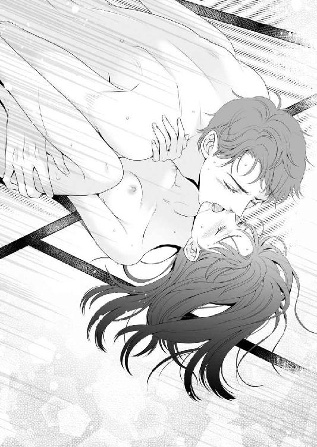

| 偽恋ハネムーン ～幼馴染みに拾われた花嫁～ (LUNA文庫) | |
| マイマイ | |
| 天海社／LUNA文庫 (2018) | |
偽恋ハネムーン
～幼馴染みに拾われた花嫁～
[著者]マイマイ
[イラスト]無味子
第一章
「それではご列席の皆様、あちらの会場にお食事を用意しておりますので......」
大慌てで駆けつけてきた係員たちが、華やかに着飾った招待客たちを式場の外へと誘導していく。
聞こえてくるのは同情の声、ヒソヒソ話、そして嘲笑。
純白の花をあしらったブーケが、手の中からするりと滑り落ちていく。
桜田陽菜は白いドレスに身を包んだまま、ひとり呆然として壇上に立ち尽くしていた。
今日は陽菜にとって、人生最高の日となる予定だった。
十年近くもの恋愛を実らせ、愛する人、東崎雄也と結婚式を挙げる日。
彼と陽菜は同じ大学で知り合い、大きな喧嘩をすることもなく穏やかな関係を築いてきた。
人当たりが良く誠実で、少々頼りない面もあるが、常に陽菜のことを第一に考えてくれる優しい彼。
どちらかといえば地味で人付き合いが苦手な陽菜にとって、彼は恋人であると同時に友人としても大切な人だった。
いつの頃からか将来のことを話し合うようになり、ふたりが二十八歳になる今年に結婚しようと決めたのも自然な流れだった。
挙式は丘の上の真っ白なチャペルで厳粛に執り行い、披露宴はチャペルに併設されたお洒落なレストランで豪華な料理を楽しむ。
陽菜が憧れていたイメージそのままの計画に、雄也はニコニコしながら賛成してくれていた。
平凡ながらも、すべてが順調だったように思う。
実際、式場に入場して赤い絨毯の敷かれたヴァージンロードを歩いたところまでは完璧に理想通りの結婚式だったのだ。
ところが。
壇上で雄也と向き合い、いざ誓いの言葉を交わそうとしたとき。
「待って！」
悲鳴のような声が、厳かな式場の空気を引き裂いた。
居並ぶ招待客たちが何事かとざわめく中。
ひとりの女性が立ち上がり、どこか挑戦的な表情で陽菜たちの真正面に駆け寄ってきた。
綺麗に髪を結い上げ、明るいピンク色のワンピースに身を包んだ可愛らしい女の子。
涙に濡れた大きな瞳が印象的だった。
「やっぱり他の人と結婚しちゃうなんて嫌っ！」
雄也さんを幸せにできるのはわたしだけ。
昨日だってあんなにたくさんキスしてくれたじゃない！
甲高い声で喚きたてる彼女を見て、陽菜はまず『頭のおかしな人がまぎれこんできた』と思った。
雄也が他の女性にキスなんてするはずがない。
なにしろわたしたちは長い時間をかけて愛を育み、やっとこの日を迎えたのだから。
そうよね？
一呼吸おいてから隣に立っているはずの雄也に視線を向けると、彼はもうそこにいなかった。
どこに行ったのかと思えば、信じられないことに式場のど真ん中で泣きながら彼女と抱き合っている。
「やっぱり君じゃないとだめだ！ リカ、愛してる」
「嬉しい、雄也さん」
熱烈なキスと呆れるくらいに長い抱擁。
そのままふたりは陽菜に背を向け、式場の外へと駆け出していってしまった。
まるで、安っぽいドラマのワンシーンのように。
陽菜は驚きすぎて声を出すこともできなかった。
これって、どういうこと？
あの女の子は誰？
雄也はどこに行っちゃったの？
頭の中が無数の疑問符で埋め尽くされていく。
どよめく式場、親類席から湧く悲鳴のような声、そして失笑。
まるで現実味がなく、すべてが他人事のようだった。
係員のひとりがすぐ横でペコペコと頭を下げながら何か言っていたが、ほとんど耳に入ってこない。
視界の隅で、陽菜の母親が父親に支えられながら泣き崩れているのが見えた。
そこで初めて、陽菜は事態が飲み込めた。
ああ、そうか。
わたしの結婚式、もう終わりなんだ。
ここにいるのは皆が羨む幸せな花嫁ではなく、式の最中に捨てられた誰よりも不幸な女。
意地悪な同僚たちがちらちらと陽菜を見上げ、内緒話をしながらほくそ笑んでいる。
すうっと全身から血の気が引き、猛烈な吐き気と悲しみが同時に襲いかかってきた。
心臓に刃物を突き立てられたように、胸がずきずきと痛む。
足元がふらつく。
息ができない。
とても立っていられずその場に体ごと崩れ落ちそうになった瞬間、誰かの力強い手に腕を引っ張り上げられた。
「おい、しっかりしろ」
男性の声。
最初は父親かと思ったが、違う。
百八十センチを超える長身、すらりとした細身の体型、思わず目を奪われるほど整った顔立ち。
そこにいたのは二つ年上の幼馴染み、沢渡隼人だった。
見慣れない礼装のせいか、一瞬誰だかわからなかった。
子どもの頃はよく一緒に遊んだものだったが、ここ数年は顔を合わせる機会も少なくまともに話した記憶がない。
わたし、あなたのこと招待してた？
どうしてここにいるの？
言いたいことは山のようにあるのに、どれひとつとしてきちんとした言葉にはならなかった。
「いいから立て、ほら」
すぐそばにいるはずなのに、その声がどこか遠くから聞こえてくるように感じられた。
耳鳴りが酷い。
まわりの景色がぐにゃぐにゃと歪んでいる。
もう、何も見たくない。
何も聞きたくない。
鼻の奥がツンと痛くなって、涙が溢れてきそうになる。
「こら、まだ泣くな」
隼人がピシリと言い放った。
泣くな、だって。
わたしの気持ちなんて何もわからないくせに。
「だって、こんな」
「あそこにおまえのことを笑ってるバカがいる。これ以上あいつらを喜ばせてやることもないだろう」
きつい言い方だったが、たしかにその通りだった。
今より情けない姿を晒すのは耐えられない。
陽菜は震える唇を引き結んで顔を上げ、隼人に手を引かれるまま平静を装って裏口から式場を出た。
花やリボンで飾り立てられた正面入り口とは違い、荷物の搬入口を兼ねた薄暗く殺風景なスペース。
ペンキの剥げた台車に、次の式のための準備品なのか幾つもの段ボール箱が積み重ねられている。
あまり掃除もされていないような小汚い場所だったが、とりあえず誰もいないのがありがたい。
大勢の視線から解放され、少しだけ呼吸が楽になったような気がした。
「よし、もういいぞ」
隼人が陽菜の手を離し、とん、と背中を押した。
意味がわからない。
「いいって、何が？」
「ここなら誰も見てない。好きなだけ泣け」
「そ、そんなこと言われても急に泣けない！ いきなり何なの、隼人のことなんて招待したつもりないんだけど」
「親父に急用ができたらしくて、いま日本にいないんだ。それで、代わりに祝儀だけでも持って行ってこいってうるさいから」
「ああ、沢渡のおじさまが......」
隼人の父親、沢渡誠一は陽菜の父親と小学校からの友人で昔から仲が良く、陽菜にとっては勤務先の社長であるのと同時に優しい伯父のような存在でもある。
また、隼人も自分の父親に付き添って、陽菜が小さい頃はたびたび陽菜の家に遊びに来ていた。
とはいえ、ふたりの父親の性格や生き方はまったく違う。
陽菜の父親は長年ごく普通のサラリーマンをやっているのに対し、隼人の父親は野心家でいまでは国内有数の企業の経営者となっている。
それでも、いまだに一緒に釣りに出かけたり将棋を指したりしているのだから、よほど気が合うのだろうと思う。
その父親同士の関係性によるものなのか、隼人の父親は陽菜のことを実の娘のように可愛がってくれている。
陽菜が就職に悩んだときには自分の会社の事務職を世話し、婚約の報告をしたときには涙ながらに祝福してくれた。
だから陽菜にとって沢渡誠一は父親同然と言っても良い相手だが、息子の隼人はそのオマケ程度にすぎない。
頻繁に会っていたのは陽菜が中学生になった頃までのことで、その後は顔を合わせることもほとんどなくなった。
覚えていることといえば、少年時代の隼人が女の子のように可愛らしい顔をしていたことと、その顔に似合わず悪さばかりしていたことくらいだった。
隼人はいずれ父親の跡を継ぐらしく数年前から副社長のポストに就いているため、一応は陽菜と同じ会社で働いている。
ただし平社員の陽菜と副社長では仕事上でも関わり合うことがなく、陽菜自身は隼人が同じ職場にいることさえすっかり頭の中から抜けていた。
なのに、久々に会うのがこんなに最悪なタイミングだなんて。
陽菜は痛む胸に手を当て、ふう、と息をついた。
「ごめんね、せっかく来てくれたのに」
「おまえが謝ることじゃないだろ。で、あの笑ってた奴らは誰だ？ 逃げた馬鹿野郎もそうだが、あいつらも最低だな」
「ああ、同じ会社の人たちね。わたし、あまり好かれてないから」
陽菜の同僚たちには、仕事中も恋愛やお洒落の話に夢中になっているようなタイプが多い。
就業時間中は何があっても仕事に集中したいという陽菜のような人間は、彼女たちにとって面白くないらしく、いつも煙たがられている。
それでもせっかくの結婚式なのだから同じ部署の人間は全員招待するべきだ、と言って譲らなかったのは陽菜の母親だった。
一人娘の門出を大勢で祝ってやりたいという気持ちが嬉しくてその通りにしてみたものの、こうなってみると後悔しかない。
「ふうん、そうか」
隼人は両手をポケットの中に突っ込んで、不愛想に顔を背けた。
その格好がまだ少年の頃の隼人と重なり、ほんのりと懐かしいような気持ちになった。
誰かのことを心配したり、ちょっと照れたりしているとき、隼人はいつでも不機嫌そうな顔をしてごまかす癖がある。
「もう控室に戻った方がいいと思う？ みんな心配してるかなあ」
「ああ、おまえが大丈夫なら」
「大丈夫って、そんなわけないじゃない。なんでそんなこと言うの」
「俺に絡むなよ」
「わたし、新郎に逃げられちゃったんだよ？」
「そうだな」
「もう、ほんと笑っちゃうよね。こんなカッコ悪い花嫁、見たことある？」
「いや」
「雄也、あの女の子とずっと浮気してたのかな。わたし、全然知らなかった」
「そうか」
「あの子、すごく可愛かった。ドレスは着てなかったけど、あの子のほうがお姫様みたいで」
「やめろよ」
「わたし馬鹿だよね、ずっと愛されてるって思ってた。浮気されてるなんて、そんなの疑ったこと一度もなかった」
雄也はいつだって優しくて。
付き合い始めた当初のドキドキするような感覚はもうなかったけれど、誰よりも心の許せる相手だった。
忙しくて会える時間が減っても、心は繋がっているって信じてた。
それなのに、こんなことって。
声が詰まった。
ぶわっと滝のように涙が溢れてきて、手で拭っても追いつかない。
隼人は顔を背けたまま、ただ黙って隣に立っている。
少しくらい慰めの言葉があってもいいのにと思う反面、何も言わずにいてくれることがありがたくも思えた。
どんな言葉をかけてもらったとしても、悲惨な現実は変わらない。
陽菜は両手で顔を覆い、床に突っ伏して涙が枯れるまで声を殺して泣き続けた。
第二章
「陽菜、まだ帰んないの？」
その声にはっとして顔を上げると、同僚の葉月ユミが向かい側の席で退屈そうに頬杖をついていた。
腕時計の針はちょうど九時を指している。
照明が半分消された夜の事務室。
残業をしていたはずの社員たちもいつのまにか帰ってしまい、残っているのは陽菜とユミのふたりだけになっていた。
「ごめん、待っててくれなくてよかったのに。毎晩わたしに付き合ってたら、ご主人に心配されちゃうでしょう？」
「いいって、そんなの。新婚ってわけじゃないし、先に帰った方が夕食作る約束だから遅く帰る口実ができて感謝したいくらいよ」
だから気にしないで、とユミは明るく笑った。
あの悪夢のような結婚式から一ヶ月。
心配した両親からは毎日のように『一人暮らしなんてやめて地元に帰ってきなさい』と電話があり、事情を知った沢渡社長からも『気持ちが落ち着くまでゆっくり休んでいい』と言われている。
でも、陽菜は式の翌日からまだ一日も欠勤していない。
これまでずっと真面目なことだけが自分の長所だと思い、皆が面倒くさがるような仕事も引き受けて頑張ってきた。
それだけに、もしも休んでしまったら心が折れて自分の存在が消えてしまいそうに思えた。
腫れ物に触るような扱いを受け続けるのかと思うと、とても両親の待つ実家に戻る気にはなれない。
社内ではいまだに悪意ある噂が流され、通りすがりにコソコソと嫌味を言われることもある。
そんなとき立ち向かう気力もない陽菜に代わり、強気で言い返してくれるのがユミだった。
友達の少ない陽菜にとって、雄也以外では唯一の親友といってもいい。
短気なところと噂好きなところが玉に瑕だが、さっぱりとした裏表のない性格で陽菜をいつも支えてくれる。
彼女は陽菜と同い年だが、幼馴染みの彼氏と十代で結婚、子どもはおらず、夫といつまでも仲の良い友達同士のような関係を続けている。
そんなユミたち夫婦に憧れ、陽菜は自分も同じように幸せな夫婦関係を築いていこうと思っていた。
それなのに。
あの日以来、陽菜はほとんど眠ることもできず、まともに食事をとることもできていない。
ひとりきりでいる時間は、いまだに泣いてばかりいる。
雄也との楽しかった思い出と突然現れた女の子のことが、片時も頭から離れない。
せめてどういうことなのか説明してほしいと思い、何度も雄也に電話してみたが無視されている。
なんとかして時間を戻せないか、やり直すことはできないか、浮気された原因はどこにあるのか。
ぐるぐると同じことばかりが頭を巡り、彼への想いを捨てきれない自分自身が嫌になる。
「はあ」
陽菜が何度目になるのかわからないため息をつくと、ユミが怒ったような表情を作ってドンドンと机を叩いた。
「もう忘れなさいってば、あんな男。結婚する前に本性がわかったんだから、きっとこれで良かったのよ。そうでしょ？」
「そう、かな」
「そうよ、元気出して。失恋を忘れるには次の恋しかないんだから！ 旦那の友達でよければ、いつでも紹介してあげるからね」
「ありがとう。でも、まだ次のことなんて考えられない」
両親からも何度か見合い話の提案をされたが、詳しい内容を聞く前に全部断った。
次の相手にも浮気されるのではないか、また式の当日に破局するのではないか、という恐怖心が常につきまとう。
そうだよね、と引き下がりかけたユミが、いきなり思い出したように机に身を乗り出してきた。
「ねえっ！」
「な、なによ、びっくりするじゃない」
「そういえば副社長とはどうなったの？ ほんと、式のときはびっくりしちゃった！ いきなり陽菜のところにすっ飛んでいくんだもん」
「どうって、べつに何も。言ったでしょ、ただの幼馴染みだって」
「ううん、あれは絶対にただの幼馴染みなんて雰囲気じゃなかった。傷つけられた姫を救うヒーローって感じ」
「大げさね、そんなんじゃないったら」
あれから隼人とは直接会うこともなく、電話で隼人の父親にお詫びとお礼を伝えただけで終わっている。
久々の再会があんな状況だったものだから、気まずくてしばらくは会いたくないという気持ちもあった。
ところがユミは隼人のことを話題にするたびに瞳をキラキラさせ、やや興奮ぎみに陽菜に迫ってくる。
「ねえ、副社長のこと素敵だと思わない？ ちょっと怖そうだけど、あんなイケメンそうそういないよ？」
「素敵だなんて思ったことない。たしかに見た目は良いかもしれないけど、子どもの頃のイメージのほうが強くて」
「陽菜、ショックで感覚がおかしくなった？ 副社長はね、社内だけじゃなくて取引先でも優秀なのとカッコいいことで有名なんだから」
「えぇ？ そんな大げさな」
「あのね、もう少し若い頃は沢渡商事のイケメン王子とまで言われてたのよ。いまだって、まだ三十歳くらいでしょ。なれるものなら嫁候補になりたいわよ。興味ないなんて信じらんない！」
「お、王子？」
「そうよ。わたしが陽菜の立場だったらね、死んでも副社長のこと逃がさないんだから！」
ここに本人がいたらかぶりつくんじゃないかと思うほどの勢いでユミが食い下がってくるものだから、陽菜は思わず笑ってしまいそうになった。
「そんなに言うなら、ユミが友達にでも恋人にでもなればいいじゃない」
「旦那がいなきゃそうしてるって。まあでも、あれだけイイ男なのに女の噂がないのが謎なんだよね」
「そうなの？」
「なんで陽菜は何も知らないの？ 営業課の男連中とはよく飲みに行ってるみたいだけど、全然女っ気がないんだって」
「ああ、全然モテないってことね」
「逆よ！ めちゃくちゃモテるんだって。でもどんなに可愛い女の子に迫られてもなびかないから、もしかしたらゲイかもしれないっていう噂も」
「ユミ、詳しすぎて怖い。それにしてもゲイって」
とうとう堪えきれなくなって、陽菜はプッと吹き出した。
その顔を見ながら、ユミがホッとしたように表情を緩めていく。
「やっと笑ってくれた。あー、ちょっと安心した」
「やだ、わざと笑わせようとしてあんなこと言ったの？」
「まあね、でもわかんないよ？ もしかしたら副社長には本当にそういう趣味が......」
言葉の途中で、ユミがぽかんと口を開けたまま動かなくなった。
視線は陽菜を通り越し、その後ろにあるドアに向けられている。
何事かと思って振り返ると、仏頂面をした隼人が壁にもたれながら立っていた。
濃紺のスーツ姿に白シャツというスタイルで、ネクタイを外して襟元のボタンを開けているせいか結婚式のときよりも幾分ラフな雰囲気だった。
腕組みをしてこちらを睨みつけている姿には、知らない人が見たら震えあがりそうな迫力がある。
「続けろよ、俺が何だって？」
「じ、じゃあ、わたし帰るね。お疲れさまです、副社長。お先に失礼しまあす！」
「ちょっと待ってよ、ユミ！」
引き留める間もなく、ユミは自分の鞄を引っ掴んで逃げるように帰ってしまった。
こんなタイミングでふたりきりにされても困る。
どこから聞かれていたのかわからないが、隼人の顔を見る限り恐ろしく機嫌が悪そうだった。
「ねえ、怒らないで。いまのはただの冗談だから」
「べつに怒ってねえよ」
「その言い方がもう怒ってるじゃない、顔も怖いよ」
「俺は元からこういう顔だ。つーか、なんでこんな時間まで残業してんだよ」
「隼人こそ、いきなり来てその態度は何なのよ。ユミがびっくりして帰っちゃったじゃない」
「知るか、早く片付けてついてこい」
「えっ、どこに？」
「晩飯食いにいくぞ」
そう言うが早いか、隼人は苛立ったように事務所の照明を次々に消し始めた。
本当にわけがわからない。
陽菜は大慌てで机上の資料を整理し、隼人に追い立てられるようにして事務室を出た。
ヨーロッパの古城を思わせるような外観に、シャンパンゴールドと黒で統一された店内。
ピアノとバイオリンの生演奏をＢＧＭに、華やかな装いの客たちが豪勢な料理を楽しみながら談笑している。
仕事用の黒いスカートにグレーのカーディガン姿の陽菜は、明らかに場の雰囲気から浮いていた。
隼人に連れてこられたのは、会社からほど近い場所にある三ツ星レストラン。
メニューには値段が記載されていないが、何を注文しても目が飛び出るほど高いのだろうと予想がつく。
陽菜はきょろきょろと周囲を見回し、テーブル越しにコソコソと隼人に囁いた。
「ねえ、こんなところ連れてこられても困るよ。夕食なんて、ファミレスとかでいいじゃない」
「気にすんな、ここは親父のおごりだ」
「おじさまの？」
「ああ、親父がおまえの様子見てこいってうるさくてな。とりあえず食おうぜ、腹減った」
「だけど、こんな高そうなお店」
「いまからキャンセルするほうが店に失礼だろ。もうぐずぐず言うな」
「うん......」
次から次へと運ばれてくる料理はどれも驚くほど美しく盛り付けられていたが、やっぱり食欲が湧かない。
最後に雄也と食事に出かけたのはいつだっただろう。
ふたりとも高給取りではなかったから、デートでこれほど素敵なレストランに来たことはない。
だけど一緒に笑い合って食べていれば、ファストフードだって陽菜にとっては最高のごちそうだった。
雄也との思い出が脳裏をよぎるたび、喉が塞がれたように息苦しくなってしまう。
ナイフとフォークを持ったまま、いつまでもテーブルを眺めている陽菜の顔を、隼人が無遠慮にのぞきこんでくる。
「なあ、聞いてるか？」
「あ、ごめん。なに？」
「いい加減に元気出せ。いつまでもそんな暗い顔してたって、あいつが戻ってくるわけでもないだろ」
「そ、そうだけど」
隼人のストレートな物言いは嫌いじゃないが、いまはぐさりと胸に突き刺さってくる。
このままではいけないというのは、自分でもよくわかっていた。
家族や会社の人たちにも、迷惑や心配ばかりかけて申し訳ないと思っている。
だからといって、どうやって元気を出せばいいのかわからない。
言葉に詰まると、自然に涙が滲んできてしまう。
隼人は陽菜の顔を見て、困ったようにデザートの皿をぐいぐいと押し付けてきた。
チョコレートでコーティングされた小さなケーキに、生クリームがたっぷりと添えられている。
「こういうの、好きだっただろ」
「いらない、お腹いっぱい」
「いいから食えって」
叱りつけるような言い方に、陽菜はしぶしぶケーキの端をフォークで削り取って口に運んだ。
濃厚な甘さとチョコレート特有の良い香りが、口の中いっぱいに広がっていく。
あの日以来、まともに食べ物の味を感じたのは初めてだった。
あと少しだけ、もう一口だけ、とフォークを動かしているうちに、陽菜はわずかな欠片も残すことなく綺麗にケーキを食べきっていた。
「美味しいね、これ」
「昔から甘いのが好きだよな。いつだったか、おまえんちのおばさんが買ってきたデカいホールケーキに頭からダイブしてただろ」
テーブルも床もクリームまみれで大騒ぎだった、と隼人が子どもの頃と同じ意地の悪い顔に戻って言った。
あの頃のことをよくよく思い出してみれば、隼人と顔を合わせるたびにくだらない悪戯を仕掛けられては泣かされてばかりいた。
ペンケースの中に大嫌いなトカゲの玩具を入れられたり、髪にガムをくっつけられたり。
いつもくだらないことで笑わせようとしてくるから一緒に遊ぶのは面白かったが、実際は楽しかったというよりも腹が立つことの方が多かった。
今回も遠い昔の失敗談を持ち出してネタにするなんて、外見だけは大人になっていても中身は悪ガキのまま変わってない。
陽菜は顔を真っ赤にしてすかさず言い返した。
「やめてよ、二歳か三歳のときの話でしょ？ 隼人なんて、いつも悪さばかりして沢渡のおじさまに叱られて泣いてたくせに」
「おまえ、親父に本気で怒られたことないな。俺が子どもの頃はすげー怖かったんだぞ」
「わたしは悪さなんてしなかったもの。おじさまはいつでも、陽菜ちゃんは良い子だねえって褒めてくれたんだから」
「おまえは何でもクソ真面目にやる、可愛くないガキだったな」
「そういう言い方......隼人は中学生くらいまで宿題とかサボってばかりだったよね。でも成績はわたしよりずっと良くて不思議だった」
「陽菜が要領悪いだけだろ」
「みんなが隼人みたいにできるわけじゃないんだからね。もしもそんなに器用だったら」
仕事以外のことにも、きちんと気を配れていたかもしれない。
雄也が他の女性に目を向けていることに気付けたかもしれない。
結局、すべての思考がそこに繋がってしまう。
陽菜の表情が曇っていくのを止めようとするかのように、隼人が自分の分のデザートの皿を差し出してきた。
「これもやる」
「い、いらない」
「ここで泣き出すのはやめろ。俺が悪い奴みたいに見えるだろうが」
「泣いてなんかない、ただちょっと」
「もう余計なこと考えるな、何でもいいから気が紛れそうなことはないのか」
「ないよ、そんなの。だからずっと仕事してたのに、それも隼人が邪魔するから」
「今度は八つ当たりか？ あんな事務室に一日中いれば誰でも気が滅入る、何か他にやりたいことを探せ」
「ううん、何もない。わたしがやりたかったのはね、あの結婚式と新婚旅行だけ」
両方だめになっちゃったけど、と陽菜は唇を噛んだ。
式と同様、新婚旅行も陽菜の希望を全部詰め込んだ最高のプランだった。
長い間付き合ってはいたけれど、雄也と泊りがけで出かけたことはない。
だからふたりにとっては、記念すべき初めての旅行にもなるはずだった。
一週間かけて、のんびりと陽菜の行きたかった場所をめぐる旅。
もちろん式のことも楽しみにしていたが、新婚旅行はもっと楽しみだった。
だからこそ、余計にショックも大きい。
ぼそぼそと独り言のように呟く陽菜の言葉を遮るように、隼人が「それ」と大きな声をあげた。
周囲にいる客たちの咎めるような視線が痛い。
陽菜は自分の唇に人差し指を当て、テーブルの下で隼人の脚を軽く蹴った。
「やめてよ、恥ずかしいじゃない。いきなり大きな声出さないで」
「いてーな、蹴るなよ。そんなに楽しみだったんなら行けばいいだろ、その旅行」
「はあ？ 無理に決まってるでしょ、とっくにキャンセルしちゃったし、夫に逃げられた妻がひとりで行くようなものじゃ」
「でも行きたかったんじゃないのか？」
「それは......うん」
「旅行会社と担当の名前教えろ、すぐにプラン組み直してもらうから」
「ええっ？ だけど、そんな」
「何か問題あるか？ 親父の名前でも出せば、明日の午前中には全部手配してもらえるだろ」
「そっ、そういう問題じゃなくて、だって新婚旅行なのよ？ 相手が消えちゃったのに」
「ひとりじゃ寂しいよな？ しょうがないから俺がついて行ってやる」
隼人は表情も変えずにさらりとそう言った。
え？
いま、一緒に旅行に行こうって言った？
隼人とふたりきりで出かけたことなんて一度もないのに。
驚きすぎて暗い気持ちも吹き飛んでいく。
「だっ、だめ、みんなに誤解されちゃう。わたしたちって兄妹みたいなものだと思うけど、でも」
「でも？」
「非常識でしょ？ ほら、男と女だし、ふたりきりで旅行なんて」
「気になるなら誰にも言うな」
「そういう問題じゃ......仕事だっていきなりそんなに長くは休めないよ。本物の新婚旅行じゃないんだから」
「仕事の方はどうにでもなる、俺がおまえの上司に話してやってもいい。あのなあ、兄妹みたいだって思ってんならこういうときくらい兄貴に頼れよ」
隼人の口からこんな台詞が飛び出してくるとは思わなかった。
成長した悪ガキは少しだけ優しくなっている。
陽菜は戸惑い、どう答えるべきかわからず口ごもった。
「なんだよ、嫌なのか」
「い、嫌だなんて思ってないけど」
「なら、行くか？」
「うん......あの、なんだかごめんね。気を遣わせちゃって」
「そんな目で見るな」
照れているのか目の下のあたりが赤くなっている。
隼人は手つかずのままだったグラスワインを一息で飲み干し、急に立ち上がった。
「よし、帰るぞ。明日の午後に連絡するから、それまでに支度しろ」
「あ、明日から行くつもりなの？ いくらなんでもそんな」
「こういうのは勢いが大事なんだ。おまえ、また明日も暗い顔して面白くもない仕事の続きをやるつもりか？」
「そ、それは」
答えられずにいる陽菜を残し、隼人は素早く会計を済ませて店を出て行ってしまった。
思いがけない展開に、頭がうまくついていかない。
だけど隼人は間違っていないような気がする。
こんな状態のまま仕事を続けていても、きっとそのうちに潰れてしまう。
いっそ勢いで旅行にでも出た方が、何もかも忘れてリフレッシュできるかもしれない。
よく考えてみると、誰かとこんなにゆっくり話したのも久しぶりのことだった。
しばらく会っていなかったのに、隼人が陽菜のことを気にかけていてくれたことも素直に嬉しく思える。
本当に頼れるお兄さんみたい。
陽菜はゆっくりと席を立ちながら、暗く閉ざされていた心の中に一筋の明るい光が差し込んでくるのを感じていた。
第三章
「おまえのプラン、センス悪すぎだろ。新婚旅行ってのは、普通は海外のリゾート地巡りだとか豪華客船でのクルージングとかじゃないのか」
茜色に染まった空と沈みかけた夕日に輝く海を背景に、隼人が疲れたような顔で旅行会社の行程表を眺めている。
一泊目の宿泊地は、地元の食材を活かした料理とロケーションが素晴らしいことで有名な老舗の旅館。
入り口のある一階のフロアはすべての壁面がガラス張りで、あらゆる角度から海辺の景色を楽しむことができる。
それなのに隼人はまわりを見ようともせず、口を開けばぶつぶつと文句ばかり言っていた。
でもその目に不満そうな色はなく、むしろ陽菜よりも熱心に行き先をチェックしてガイドブックと見比べている。
フロントに併設されたカフェで案内を待つ間、陽菜はそんな隼人のちぐはぐな様子がおかしくてくすくすと笑っていた。
始まりは今日の正午。
約束通り連絡してきた隼人に『荷物を持っていますぐ空港まで来い』と急かされ、陽菜は大急ぎでタクシーに飛び乗った。
その後は隼人に引きずられるようにして飛行機に乗せられ、目的地に着いてからは旅行会社が用意した行程表に従って陽菜の行きたかった名所を三つばかり訪れた。
歴史的に有名な寺、癒し効果があるとされる滝、何百種類もの草木や花が鑑賞できる植物園。
隼人は面倒くさそうな顔をしながらも、観光している間中ずっと率先して荷物を持ち、休憩するときには積極的に陽菜の好みそうな店を探し、人混みでははぐれてしまわないようにさりげなく気を付けてくれていた。
こういうところは、昔の彼と比べるとずいぶん印象が違う。
陽菜を元気づけるための旅行だからと親切にしてくれているのだとは思うが、なんだか申し訳ないような気持ちになった。
「ごめんね、無理させちゃって。ほんとは隼人、お寺とか植物園なんて興味なかったでしょ？」
「べつに。それより、おまえの趣味どうなってんだよ。城の見学に観光バスに温泉って、どこのババアだ」
「いいじゃない、海外は怖くて行きたくないし、テーマパークみたいなところも苦手だもん。のんびりいろんなものを見てまわるような、ごく普通の旅行がしたかったの」
「一週間もそんなことして退屈じゃないのか。おまけに移動は電車とバスとか面倒だろ、レンタカー借りろよ」
「だめ、車ばかりじゃ面白くないもの。ほら見て、ここ、旅行の後半には船に乗る予定もあるんだから」
「湾内一周の遊覧船？ これは移動手段じゃないだろ、元の場所に戻ってくるんだぞ」
「いいじゃない、とりあえず船は船だもん。ねえ、連れてきてもらっただけで少しは気が晴れたから、嫌なら早めに帰ってもいいよ」
陽菜がそう言うと、隼人は行程表を見つめたままぶっきらぼうに答えた。
「いや、おまえが楽しいならそれでいい」
「そ、そう......？」
なんだか調子が狂ってしまい、陽菜は次に言おうとしていた言葉を見失った。
そっけない態度の裏側に、陽菜への思いやりが透けて見える。
会話を重ねるほどに、やんちゃで悪戯ばかりしていた子ども時代のイメージとのギャップが広がっていく。
口下手なのはそのままだけど、なんだか優しくなっている。
昔とはまるで別人みたい。
そう思うと何を話せばいいのかわからなくなってきて、陽菜は見終わった宿のパンフレットから顔を上げることができなくなった。
「それでは沢渡様、御用の際はいつでもお声がけくださいませ。あの......奥様、どうかなさいましたか？」
「ご親切にありがとうございます、朝が早かったせいで妻は少し疲れているようです。しばらく休めば落ち着くと思いますので」
部屋に案内された直後。
係の女性が気遣わしげな表情で出て行くのと同時に、陽菜は隼人に向かって傍にあった座布団を思い切り強く投げつけた。
隼人は難なくそれを受けとめながら、肩を震わせて笑っている。
「あっはっは、陽菜の顔！ いくらなんでも動揺しすぎだろ、いまどき高校生でもそんな反応しねえよ」
「もう、笑わないで！ だって考えてなかったんだもん、こ、こんなことになってるなんて」
陽菜は耳まで真っ赤になりながら、座卓の下にでも隠れたい気持ちでいっぱいになっていた。
案内されたのは、広々とした和室に寝室として使用するための洋室がプラスされた雰囲気の良い部屋だった。
大きな窓からの眺めは最高で、クローゼットには色や柄を選べるように浴衣が何種類も入っている。
そこまでは係の女性の説明を聞きながら『なんて素敵な部屋だろう』と心を躍らせていた陽菜だったが、寝室に繋がる引き戸が開けられたときには衝撃で口もきけなくなった。
シックな色調で整えられた部屋の中央。
そこには大人が三人で寝ても余るくらいに大きなベッドが、ひとつだけドンと置かれていた。
なんでひとつしかないの？
これって、一緒に寝ろってこと？
まさか、そんな。
ほんの一瞬、隼人の腕の中で眠っている自分を想像してしまうと、後はもうだめだった。
うわっ、どうしよう。
変なこと考えちゃった。
だめ、恥ずかしくってもう無理！
急激に発熱したときのように顔が熱くなり、陽菜は係の人がいるのにも関わらずその場にしゃがみ込んで動けなくなった。
隼人はまだげらげらと笑っている。
腹の立つことに、最近見た中では一番楽しそうな顔だった。
「な、何がそんなにおかしいのよ！ 隼人は平気なの？ ベ、ベッド、ひとつしかないんだよ？」
「おまえが選んだ部屋じゃないのか？ 俺が変更させたのは日程だけで、あとはほとんど元のプランのままだからな」
そうだっけ？
新婚旅行の予定を立てていたときは幸せ気分に浮かれていたからか、細かいことまで覚えていない。
それでもなんだか悔しくて、陽菜はもう一枚座布団を投げつけながら赤くなった目で隼人を睨みつけた。
「なんでそんなに普通でいられるわけ？ さらっと『妻』とか言っちゃうし、いったい何考えてるのよ！」
「新婚旅行の設定はそのままで予約してんのに、他人ですって言うほうが不自然だろうが。変に勘繰られてワケ有りだと思われるぞ」
「え......ワケ有りって？」
「不倫カップルとか？」
「隼人！」
からかうような口調と意地悪な目は、やっぱり悪ガキだった頃そのままだった。
なんだ、全然変わってないじゃない。
ガチガチに固まっていた肩の力がすうっと抜けていく。
柱にもたれて息を整えている陽菜の向かい側で、隼人は湯呑の横に添えられた茶菓子を頬張り始めた。
「あ、これ美味い。こっちの白い饅頭みたいなやつ」
「もうすぐ夕食なのに、そんなの食べたらお腹いっぱいになっちゃうよ。ねえ、それより」
「わかったって。じゃあそっちの茶色いクッキーみたいなのは、俺のも食っていいぞ」
「お菓子なんかどうでもいい！ ほ、本気で、あのベッドで、その、わたしと一緒に寝るつもり？」
「一緒に寝てほしいのか？」
「そ、そうじゃなくて」
何か言うたび陽菜は冷や汗が出るほど焦ってしまうのに、隼人は顔色ひとつ変えず平然としている。
この状況でどうしてそれほど落ち着いていられるのか、陽菜にはまったく理解できなかった。
「ねえ、もしかして女の子との旅行に慣れてる？ だから平気なの？」
「まさか」
「じゃあ、その落ち着きは何？ わたし、ほんとにあのベッド見て心臓が止まりそうになったんだけど」
「大げさな奴だな、もう二十八になったんだろ？ 結婚する予定もあったことだし、男と寝たことくらい」
「わーっ、やめて！ そういう話、隼人とだけは絶対にしたくない！」
陽菜は耳を塞ぎ、畳の上で両脚をばたばたさせて強引に話を中断させた。
女性の友人とでも性的な話題は苦手なのに、昔から知っている異性が相手だとなおさらだった。
大げさだと言われようが、幼い頃の記憶まで汚されていくような気がして我慢ならない。
隼人は陽菜の態度が子どもっぽいとまたさんざん笑った後で、窓際に置かれた二人掛けのソファーを指さした。
「心配すんな、俺はあっちで寝る。ベッドはおまえに譲ってやるよ」
「え？ そんなの悪いよ、窮屈そうだし疲れちゃう」
「俺のことはいいって。旅行の間くらいはしっかり寝ないと、冗談じゃなくそのうちにぶっ倒れるぞ」
ああ、また。
ふざけた表情の下から、優しい一面がのぞいている。
隼人のこういう顔を見ていると、気持ちがざわざわと落ち着かなくなってくる。
陽菜は「ありがとう」と返すこともできずに、菓子皿からクッキーをひとつ取って口の中に放り込んだ。
『えーっ、副社長と何してるって？ ほらほら、もっと詳しく聞かせなさいよ！』
電話の向こう側で、ユミがきゃあきゃあとはしゃいでいる。
やっぱり言わなきゃよかった。
後悔しても話してしまったものは仕方がない。
面倒なことになると思いつつも彼女に電話したのは、夕食の後で部屋に戻ると携帯電話にユミから何十件もの着信が入っていたからだった。
電話がつながった途端『どこにいるの』『何をしているの』と矢継ぎ早に質問を浴びせられ、適当にごまかそうとしてみたもののユミにはまるで通用しなかった。
とうとう本当のことを白状させられてしまい、今度は別の方向から質問攻めにあっている。
陽菜は携帯電話をぎゅっと握りしめ、壁に向かってこそこそと小声でユミをたしなめた。
「やめてよ。ユミが思っているようなことじゃないの、隼人はただわたしを励ましてくれようとしているだけで」
『ふうん？ でも同じ部屋に泊まるんでしょ、男と女がふたりきりで何もないわけないでしょー！』
「何もないってば。わたしはベッドで、隼人は隣の部屋のソファーで寝るんだから」
『えーっ、つまんない。でもせっかくあんなカッコいい人と一緒なんだからさ、おやすみのチューくらいしてもらえば？』
「お、おかしなこと言わないで。そういう関係じゃないって何回言えばわかるの、もう！」
ユミのせいで、また一瞬だけ隼人にキスをされる場面を思い浮かべてしまった。
そんなことありえないと思うのに、胸がドキドキして頬が熱くなってくる。
隼人が大浴場に行ったまま、まだ戻ってきていないのが幸いだった。
こんな顔を見られたら、きっとまたからかわれてしまう。
急いで電話を切ろうとすると、ユミが大きな声で『待って！』と叫んだ。
『大事なこと言い忘れてた。今日の夕方ね、雄也くんが会社に来たんだよ。陽菜のアパートに行っても留守だったからって』
「雄也が？ どうして」
『よくわかんないけど、陽菜に謝りたいらしいよ。一ヶ月も音信不通だったくせに、いまごろ何言ってんのって話だよね』
「そ、それで、すぐに帰っちゃった？」
『ふざけんな、ってわたしが追い返したの。式のときより痩せてて元気なかったけど、そんなの自業自得だもん』
「そう......何かあったのかな」
『あっ、だめだめ！ 同情なんか必要ないよ』
「でも、元気なかったんでしょう？」
『そんなの演技かもしれないじゃん。陽菜にも直接連絡してくるかもしれないけど、出ちゃだめだからね。いまさらあんな男と関わっても傷つくだけだよ』
「だけど、話くらい聞いてあげないと」
『陽菜、自分が何されたか忘れたの？ もう雄也君のことは忘れて、次に進まなきゃ時間がもったいないよ。わかった？』
言いたいことだけ言い終わると、ユミは『じゃあね』と一方的に電話を切ってしまった。
旅行気分に浸りかけていた頭の中に、人の良さそうな雄也の笑顔が割り込んでくる。
着信記録を見直してみると、ユミの名前に混じってたしかに雄也からも何度か着信があったようだった。
この一ヶ月、ずっとあのときの事情を知りたいと思っていた。
彼が元気にしているのかどうかも、すごく気になっていた。
いきなり陽菜の会社にまで来るなんて、何があったんだろう。
ユミの意見は正論だとは思うが、長い間恋人だった相手のことをそう簡単には忘れられない。
電話してみようかな。
だけどやっぱり......。
しばらく迷っているうちに、いきなり肩を揺さぶられた。
「おい、大丈夫か」
振り向くと、浴衣姿の隼人がすぐ後ろに座っていた。
まだ濡れたままの髪が額にかかり、着崩れて胸元が大きく開いている。
見てはいけないものを見てしまったような気がして、陽菜は慌てて目をそらした。
「やっ、なんなの、びっくりするじゃない！」
「そっちこそ何だよ。声かけても返事しねえから、気分でも悪いのかと思って焦っただろうが」
「ご、ごめん。あの、ユミから電話があってね、それで」
雄也が会社に来たことを話すと、隼人は真顔になって「そうか」と言った。
相変わらず心の中が読めない。
いまだに自分を捨てた男を忘れられない、惨めで哀れな女だと思われているのだろうか。
なんとなく、隼人に悪く思われるのは嫌だった。
「それでね、電話しようか迷ってたの。こんなこと相談するのも変だけど、隼人はどうしたらいいと思う？」
「おまえの好きにすればいい。......でも」
「でも？」
「怖いんだろ？ なんとなく」
「そう、ほんとにそうなの」
「なら、電話が終わるまでここにいてやる。それか、隣の部屋に」
「え？ なんで」
「ひとりだと不安なんだよな？」
「隼人......」
陽菜のために傍にいる、と言ってくれている。
ゆらゆらと頼りなく揺れている心を、さりげなく支えてもらったような気がした。
結婚式の日、壇上で倒れそうだった陽菜を救い上げてくれた力強い腕を思い出す。
悲しくもないのに涙が出そうになった。
こんな状態じゃ、いま電話をしてもまともに話せそうにない。
「やっぱり今日は電話できないかも。でも、ありがと」
「わかった。そんじゃ明日も早いから寝るぞ、おやすみ」
「お、おやすみ」
隼人は押し入れから予備の毛布を引っ張り出し、本当にソファーで寝てしまった。
ほら、やっぱり何もなかったじゃない。
ユミとの電話であんなにドキドキしたわりには、あまりにもあっけない。
そう思った瞬間、ほんの少しだけ、何かが起きることを待っていた自分に気が付いた。
兄のような存在だと思い込んでいた隼人を相手に、こんなことを考えてしまうなんて嫌になる。
隼人はただ、弱っている陽菜を可哀そうに思って優しくしてくれているだけなのに。
もう、ユミが余計なこと言うから。
寝室のベッドに潜り込み、八つ当たりするように携帯電話を枕に投げつけてみても心が波立つのを抑えられない。
おかしなことばかり考えてしまうのは、雄也のことで動揺しているせいなのかも。
隼人の言う通り、早く寝なくちゃ。
陽菜は頭まですっぽりと布団をかぶり、芽生え始めた感情を打ち消すことに躍起になっていた。
第四章
「歩いて観光ってのも意外と悪くないな。あの橋の向こうに土産物屋が並んでるらしいぞ、行くか？」
旅館でもらった観光用の地図を片手に古い町並みを歩く隼人は、どことなく昨日よりも機嫌が良さそうに見える。
陽菜は顔が火照るのを感じながら、うん、と小声で返事をした。
今日は朝から雲ひとつない快晴で、日陰に入ると穏やかな風が心地よく頬を撫でていく。
絶好の観光日和だというのに、陽菜は少しもまわりの景色が目に入らずにいた。
昨夜からうまく気持ちが切り替えられない。
隼人のことをついつい変なふうに意識してしまう。
陽菜の背中を押す男らしい大きな手、逞しさを感じさせる筋肉質な腕、たまに見せる少年の頃と変わらない無邪気な表情。
一度意識し始めると、彼の何もかもが気になって仕方がない。
わたしってそんな女だった？
雄也とダメになったからって、手近な男の人なら誰でもいいの？
あれこれ考えるほど、自分のいい加減さにへこんでしまう。
陽菜の変化に気付いているのかいないのか、隼人は純粋に観光を楽しもうとしているようだった。
宿を出た後は、出店で名物のだんごを食べているときも、明治時代から続いているらしい工芸店を見学しているときも、歩いているときも、ことあるごとに陽菜に話しかけてくる。
彼の隣にいると胸の奥に温かなものが流れ込んできて、とても普通の態度ではいられない。
照れくさいのを隠すためにわざと早足で歩いてみたり、両手で顔を隠すようにして押さえてみたり。
陽菜はすっかり挙動不審になっていた。
自分でも変だと思うがやめられない。
そうして歩いているうちに、大きな橋の手前で隼人がふいに足を止めた。
「そんなに気になるのか」
「え、えっ」
心の内を見抜かれたようで心拍数が跳ね上がった。
じろじろ見すぎて気持ち悪いと思われたかも。
ところが隼人は、全然違う話を持ち出した。
「あいつのこと。電話するのは、旅行が終わってからでも遅くないんじゃないか」
「電話？」
「昨日の夜から陽菜、何か変だもんな。あんまり考えすぎるなよ」
「ああ......」
なんだ。
ずっと雄也のことで悩んでいると思われていたらしい。
だから隼人は、陽菜を元気づけようとして今朝からやたらと笑いかけていてくれるのだと気が付いた。
陽菜は後ろめたいような思いで、ブラウスの袖口のボタンを留めたり外したりしながらボソボソと呟いた。
「う、うん。そうだよね、ありがと」
「いいって。それにしても、こっちはすごい人混みだな」
橋を渡り切った先で次から次へと押し寄せてくる人波を避けるように、隼人は陽菜の腕を引いて歩道の隅に寄った。
人々が流れていく先には派手なのぼりを立てた数十軒の屋台と、大きな鐘が吊るされた白い塔のようなものが立っている。
なんとなく見覚えがあるような気がしたが、陽菜が思い出すよりも早く隼人がすぐ傍にあった解説板を読み上げていく。
「えーと『好きな人と一緒に鐘を鳴らしてキスをすると永遠に結ばれ......』うわあ、ありがちだな。なんでこんなのが人気あるんだ」
隼人は鐘を鳴らしにいくカップルたちを呆れたような顔で眺めているが、陽菜は幸せそうな彼らがすっかり羨ましくなった。
ここは数ある恋人スポットの中でも実際に効果があると評判で、陽菜もいつか雄也と来てみたいと思っていた場所だった。
もしも結婚式の前に来ていれば、あんなことにならなかったかもしれない。
形だけで効き目なんてないと頭ではわかっていても、ついついくだらないことを思い出して暗い気持ちになってしまう。
表情を曇らせていく陽菜を見て、隼人が慌てて謝った。
「あ、悪い。俺、べつに馬鹿にするつもりは」
「ううん、行きたかったのはずいぶん前だもん。わたしね、おまじないとかそういうのが好きで、それでちょっと」
笑って済ませようとしたのに、頬が引き攣ってうまく笑えない。
また困らせている。
隼人に惹かれながらも、雄也との思い出にもグズグズと引きずられている自分がますます嫌いになっていく。
なにか少しは明るく聞こえる言葉を言おうと探しているうちに、隼人がポンと陽菜の背中を押した。
「だったら行くか。もう目の前だしな」
「ま、待ってよ。あれは、恋人同士が」
「兄妹でも幼馴染みでもいいだろ？ 証明書が要るってわけでもないだろうし」
「だけど、キ、キスは？ そんなの、わたしたち」
「強制じゃないよな？ とりあえず、記念に鐘だけ鳴らしてこようぜ」
陽菜は動揺しすぎて胸が苦しくなってきているのに、隼人はまったく気にしていないようだった。
自分から言い出したことなのに、いまでは『兄妹』という言葉が重い枷のように思えて仕方がない。
ふたりの間に超えられない一線がある、と宣言されているようで寂しくなってくる。
長い行列に並んでいる間中、陽菜は黙って塔の上にぶら下げられた銀色の大きな鐘を見つめていた。
一組、二組、と順調に列が進んでいく。
カップルたちは十段ほどの階段を上がり、一緒に長いロープを引っ張って鐘を鳴らし、口づけを交わしているところを記念撮影してもらった後で手を繋ぎながら下りてくる。
たったそれだけの短いセレモニーだったが、撮影を終えて戻ってくる姿は皆一様に幸せそうだった。
心の奥が嫉妬でモヤモヤしてしまう。
そんな調子だったから、陽菜はいざ順番が回ってきてもうつむきがちで、楽しそうなふりをすることさえできずにいた。
手を伸ばし、隼人と一緒にロープを引っ張る。
鐘はガランガランと良い音で鳴り響くけれど、陽菜は上の空だった。
雄也との思い出と隼人への説明できない感情が、心の中でぐちゃぐちゃに絡まり合っている。
やっぱりだめ、今日は本当に最低。
急いで階段を下りようとしたとき、真正面でスタンバイしていたカメラマンが流れ作業のようにレンズを向けてきた。
「じゃあ『３』で撮りますよ！ 準備はいいですかー？」
「あの、わたしたち写真は」
いらないです、と断ろうとしたそのとき。
隼人に引き留められ、両手で肩を抱かれた。
顔がすごく近い。
ふざけているのとは違う、真剣な表情だった。
途端に何も言えなくなる。
キスされる、と思った。
心臓が破裂しそうな勢いで鼓動を打つ。
「はい、いいですか？ １、２、３」
機械的なカメラマンの合図。
反射的に目を閉じた。
肩に置かれた手が温かい。
隼人の呼吸を間近に感じたその時、柔らかなものがそっと額に触れた。
シャッター音が響く。
――すべてがほんの一瞬だった。
え、これだけ？
ぼんやりしている陽菜を連れて階段を下りながら、隼人が声を殺して笑っている。
「な、なによ」
「おまえこそ何だよ、その顔。ひょっとして、こっちにしてほしかったとか？」
ちょん、と指先で口元をつつかれた。
カーッと顔が熱くなってくる。
信じられない、またからかわれた。
「ち、違う！ もう、隼人なんか大嫌い！」
「怒るなって。あの写真買ってやるから」
「いらないったら、ねえ隼人！」
隼人が出口の係員に声をかけ、鐘の形をした紙製のファイルを受け取ってすぐに戻ってきた。
「ほら、やるよ」
「もう、こんなのもらっても......」
恥ずかしさを紛らわせるために怒ったふりをしながら、陽菜はそれを受け取って中を開いた。
いま撮られたばかりの写真。
背を屈めた隼人が、陽菜を抱き寄せて額に唇をつけた瞬間が写っている。
頬を赤くして目を閉じている陽菜、緊張しているのか少しだけ表情の固い隼人。
心がきゅっと甘く締め付けられていく。
ふたりはまるで本物の初々しい恋人同士のようで、陽菜はしばらくの間その写真に見入っていた。
『なにそれ、完全にデートじゃん。いいなあ、わたしも副社長みたいなイケメンと旅行したーい！』
今日もユミは電話の向こう側で賑やかにはしゃいでいる。
宿に戻って夕食と入浴を済ませた後、ふと思い出してバッグの中の携帯電話を見てみるとまたユミから何度も着信が残っていた。
何か用があるのかと思ってかけ直してみると、昨夜と同じく旅行の様子を根掘り葉掘り尋ねてくる。
細かいことは省いて一緒にあちこち観光したことをさらっと伝えただけだったが、それでもユミはひとりで大騒ぎしている。
「デートじゃないったら。それにユミには優しい旦那様がいるでしょ、他の男の人と旅行したいなんて問題発言だからね」
『それとこれとは別よ。そこに副社長いるの？ 電話代わってよ、わたしのこと友達だって紹介して』
「いない。お風呂に行ってる」
『うーん、残念。ところでほんっとに副社長と何もなかった？ だとしたら、ゲイ説もあながち間違ってないのかも』
「馬鹿なことばっかり言わないで！」
つい言い方がきつくなった。
何もなかった、と軽く返せばいいだけなのにそれができない。
手元にはあの塔の前で撮られた写真がある。
ファイルを開いたり閉じたりして、宿に戻ってからも隼人の目を盗んでは何度も眺めている。
そこに写っている陽菜は、初めての恋に戸惑う少女のように恥じらいながら彼の口づけを受け入れていた。
本当にそうなら良かった、と思わずにはいられない。
お互いにまだ十代で、隼人が陽菜の初めての相手で。
汚れのない純粋な恋。
あの頃は考えもしなかったけれど、自分はもしかしたら選ぶべき相手を最初から間違えていたのではないか。
そんな考えがふと浮かんでは消えていく。
でも、わかっている。
時間は戻せず、やり直しはきかない。
ただ額に残された唇の感触に、心がかき乱されていく。
『あはっ、怒んないでよ。それでね、雄也くんのことなんだけど』
「えっ？」
また雄也の名前が出てきた。
聞きたくない。
だけど知っておきたい。
浮ついていた気持ちが厳しい現実に引き戻されていく。
「雄也がどうしたの？」
『今日も会社に来たんだよ、どうしても陽菜に会いたいって。休暇中だって言って追い返したけど、しつこくって嫌な感じ』
「二日も連続で来るなんて、やっぱり何かあったんじゃ」
『どうかな、陽菜に謝りたいってそればっかり。あの女の子もちょっと問題ある子みたいだから、うまくいってないのかもね』
「問題って？」
『噂でちょっと聞いただけなんだけどね。あの子って雄也くんと同じ会社で、けっこう男関係が激しいらしいんだ。見た目は可愛いけど性格悪いって有名なんだって』
「そう......」
そんな女の子に負けてしまったのかという悔しさと、雄也のことを心配する気持ちが交錯する。
やっぱり早めに話を聞いてあげたほうがいいかもしれない。
陽菜の迷いをばっさりと切り捨てるように、ユミが『だめだめ！』と大きな声を出した。
『可哀そうなんて思う必要ないんだから。とにかく陽菜は副社長とのラブラブ旅行を楽しんで。じゃ、また電話するねー！』
「ユミ、切らないで！ もっと詳しい話を」
そう言いかけたところで、すでに電話は切れていた。
いつも勝手なんだから。
苦笑いしつつ、陽菜は携帯電話を写真と並べて座卓の上に置いた。
時刻は二十三時を過ぎている。
そろそろ寝ようかと思っていたところに、ようやく隼人が戻ってきた。
「なんだ、またその写真見てたのか」
「え？ あ、うん」
昨日と同じ浴衣姿に濡れた髪。
笑顔がやけに眩しく感じられる。
目をそらしてしまった陽菜を気にする様子もなく、隼人はタオルで頭を拭きながら隣に座った。
距離が近すぎる。
ほのかに漂う石鹸の匂いにまた心が乱されていくようで、陽菜は畳にお尻をつけたまま半歩ほど隼人から離れた。
「なんだ、まだ怒ってんのか？ そんなに嫌だったんなら謝るからさ、いい加減に許してくれよ」
隼人が困り果てたように肩を落とし、大げさにため息をついた。
こんな態度をとられると、ますます頭が混乱してしまう。
「謝るって、何を？ わ、わたし、怒ってなんか」
「嘘つくな、あの塔の後からずっと俺のこと無視だもんな。晩飯のときも黙って食ってるだけで、すっげえ機嫌悪そうだった」
「無視なんかしてない、ただ、なんていうか」
「わかってる。俺がいきなりキスしたのが気に入らなかったんだろ？ 悪かった、そんなに深い意味があったわけじゃ」
「意味......なかったの？」
普段なら気に障るような言葉じゃない。
隼人は悪気がなかったと言いたいだけだろうし、そんなのは最初から陽菜もわかっている。
だけど、なんだかその一言が引っかかって、ものすごく悲しくなった。
「だってそうだろ、あんなのはただの」
「ただの、何？ はっきり言って」
思わず棘のある声が出た。
隼人はきょとんとした目で陽菜を見ている。
ああ、どうしよう。
こんな言い方するつもりじゃなかったのに。
顔を上げて『なんでもないの、ごめんなさい』と謝るつもりが、次に飛び出した言葉もまったく別のものになっていた。
「わたし、隼人のこと全然わかんない！ すぐわたしのことからかって笑って、もう、意味がないならあんなことしないで！」
「え？ 落ち着けよ、陽菜」
「隼人のせいで、全部ぐちゃぐちゃなんだから！ 昨日からずっとひとりでドキドキして、なのに全然隼人わかってない！」
「わかってない？ いったい何を」
「黙って！ わたしこの写真すっごく好きなのに、でも隼人には意味なんてないんでしょ？ そういうこと言われると寂しくなっちゃうし、なんだか悲しくって」
途中から涙が溢れ出し、陽菜はうわあんと声をあげながら子どものように泣きじゃくった。
ああ、馬鹿だ。
ぐちゃぐちゃになった感情が、最悪の形で溢れ出してくる。
隼人の前では、もっと大人な態度でいたかった。
迷惑ばかりかける面倒な女でなんかいたくないのに。
隼人は困ったような顔で、珍獣を前にしているかのようにぎこちなく陽菜の頭を撫でている。
「あのキスのことを怒ってるわけ......じゃないんだよな？」
「もう子どもじゃないのよ、あのときほんとにキスされるって思った！ なのに、隼人ったらおでこなんかにするんだもん」
「いや、それは」
「わたしの大事な人、みんなわたしから逃げていっちゃう。誰にも好きになってもらえないから、キスだってしてもらえない！」
これまで溜め込んでいたあらゆる思いが爆発して、自分でも何が言いたかったのかよくわからなくなってくる。
これではまるで八つ当たりしているのと変わらない。
隼人はしばらく黙っていたが、やがて脱力したように笑った。
「なんなんだ、おまえは。そんなにワアワア泣くことないだろ、こっち向けよ」
「わたしだって泣きたくなんかない！ だけど涙が」
隼人の方を見た瞬間、強く顎をつかまれて唇を重ねられた。
思わず息が止まる。
わずかに触れ合う程度のごく軽い口づけ。
何かを感じる間もなく、唇はすぐに離れていく。
びっくりして何度も瞬きをしているうちに、こつんと額を当てられた。
「ちょっとは素直になれ、意地っ張り」
「い、いまの、なに？」
「なんだよ、キスしてほしかったんじゃないのか？」
見惚れてしまうほど優しい眼差し。
心の奥がくすぐったくなる。
涙が止まった。
でも、やっぱり思っていたのと違う。
欲しかったのはこんなのじゃない。
陽菜は隼人の浴衣の胸元をぎゅっと握り、彼の茶色い瞳をじっと見つめて呟いた。
「いまのも、だめ」
「ああ？ しただろ、ちゃんと唇に」
「だけど、だめ」
「もう一回してほしいって言ってるのか？」
「そういうこと、口に出さないで」
「これ以上したら、シャレにならなくなるぞ」
「――それでも、いいかも」
「いいのか？」
「わかんない......」
なんだそれ、と隼人がまた笑う。
吐息が触れ合う距離での会話。
ただ額をくっつけ合っているだけなのに、顔が熱くてたまらない。
それでも、しばらくこのままでいたいと思う。
言葉が途切れ、どちらからともなく唇を寄せ合った。
ゆっくりと、お互いの存在を確かめ合うように。
重なり合った唇から隼人の体温が伝わってくる。
柔らかく優しい感触。
心の奥が甘く疼く。
まだ、このまま終わらせたくはない。
隼人はまたすぐに離れようとしたけれど、陽菜は彼の胸元を引き寄せて自分から唇を押し付けた。
何度も、何度も。
刹那的な衝動。
深い考えなどなかった。
離れたくない。
その一心だった。
触れ合うだけの口づけでは足りず、だからといってこの後どうすればいいのかもわからない。
隼人は拒むこともなく、小鳥が餌をついばむような陽菜のつたないキスを受け入れている。
室内の空気が濃密な熱を孕んでいく。
隼人の大きな手に肩を強くつかまれた。
痛いほどの力で抱き寄せられながら、舌先で強引に唇をこじ開けられていく。
「ん、んうっ......！」
潜り込んできた熱い舌先が、陽菜の口の中をねっとりと這い回っていく。
ぬるついた粘膜がぴったりと密着する感触に、ぞくりと鳥肌が立った。
求めているものは、きっとこの先にある。
上顎から下顎へ、歯の一つ一つまで時間をかけて探られ、執拗に舌を絡められていく。
尖らせた隼人の舌先に口腔粘膜をくすぐられるたび、びくっ、びくっ、と怯えるように背中が震えてしまう。
隼人の息遣いが荒くなっていく。
そこに陽菜自身の乱れた呼吸が重なる。
キスだけでは終わらない予感。
ふたりとも同じことを感じているのがわかった。
それでもかまわない、と思っていたはずなのに。
唾液を啜られ、舌を強く吸われながら畳の上に押し倒されたとき、陽菜は思わず声をあげた。
「いやっ！」
嫌だなんて思ったわけじゃない。
ただ、何とも言えない怖さを感じた。
隼人が動きを止め、驚いたように陽菜を見下ろしている。
ふたりを取り巻く空気の温度が冷めていく。
苦々しい沈黙が下りる。
この状況をうまく収める方法が思いつかない。
「ご、ごめんなさい、わたし」
「いいんだ、俺が悪かった」
隼人は陽菜を抱き起し、気まずさを払拭するように陽菜の額にキスをした。
「おやすみ、今夜はもう寝たほうがいい」
「は、隼人」
「たしか、明日は朝からバスツアーだったよな？ 寝坊すんなよ」
隼人は立ち上がって大きく背伸びをし、昨日と同じソファーで頭から毛布をかぶって寝てしまった。
隼人の態度は、昨日までと何も変わらないように見える。
だけど。
あの一瞬、彼はたしかに男だった。
大きな手につかまれた感触、逞しい胸板を通して感じられる力強い鼓動、口の中に差し入れられた舌の熱さ。
そのすべてが、肌の上にまだはっきりと残っている。
もう、ただの幼馴染みではいられない。
陽菜はしばらく立ち上がることもできないまま、震えの止まらない体を自身の両手で抱き締めていた。
第五章
『それでは皆様、短い時間ではございますがどうぞよろしくお願いいたします』
バスガイドの退屈な挨拶が終わったところで、前列の席からぱらぱらと気のない拍手が聞こえてきた。
平日のせいか空席が目立つ。
一番後ろの席に陽菜たちがいるのを除けば、乗客は前列に四人と真ん中あたりの列に三人しかいない。
隼人は配られたばかりのパンフレットをぱらぱらとめくり、眠そうに大きなあくびをした。
「えーと、城の見学に古墳巡りと水族館？ 小学生の校外学習かよ、まったく」
「そっ、そんなっ」
ただ『そういう言い方をするのは良くないよ』と軽くたしなめようとしただけなのに、声が裏返っておかしな調子になってしまう。
焦った陽菜の顔を見て、ぷっ、と隼人が笑った。
ああもう、腹が立つ。
陽菜は顔を赤くしながらバシバシと隼人の膝を叩いた。
「もう、今朝からわたしのこと笑ってばっかり。ほんと失礼ね！」
「おまえが悪いんだろ、ちらちら俺の顔見てすぐ赤くなって。ちょっとキスしたくらいでなんなんだよ」
図星を突かれ、ずきんと胸の奥が痛んだ。
まさに隼人の言う通り、陽菜は昨夜の一件がずっと心に引っかかっている。
あの行為には意味があったのか。
もしも拒まなければ、そのまま次の段階に進んでいたのか。
隼人は陽菜のことをどう思っているのか。
そして、隼人に対する自分の本当の気持ちはどうなのか。
ひとつ考え始めるときりがなくて、頭痛がするほど悩んでしまう。
それなのに隼人ときたら、まったく何もなかったように平然としているから腹が立つ。
「ちょっとキスしただけなんて、簡単に言わないでよ。わたしにとっては」
「まあ、ああいう気晴らしも必要だよな」
「き、気晴らし？」
「わかってる。あいつとのこと忘れたくて、誰でもいいから甘えられる相手が欲しかったんだろ？」
「え......」
合っているようで、何かが微妙にズレている気もする。
自分の気持ちがはっきりしないために『違う』とも言いきれず、陽菜は言葉を濁した。
ちっともすっきりしない陽菜の心とは反対に、隼人はひとりで納得したように話を続けた。
「深く考えすぎるな。俺のこと、都合の良い男だと思えばいいんだ」
「でも、そんなのって」
「旅行が終わるまではおまえの面倒見ろって、親父にも言われてるからな。手軽な遊び相手でも、偽物の恋人でも、好きなように思えばいい」
「え、あ、ありがとう」
なんとも間の抜けた返事だったが、それ以上どうにも言いようがなかった。
手軽な遊び相手？ 偽物の恋人？
思ってもなかった隼人の見解に、ただでさえ混乱していた頭の中がさらにこんがらがってくる。
「本物の彼氏じゃないのに......キスとか、してもいいと思う？」
「全部おまえが決めればいいんだ。あいつのことを忘れるために、俺ができることなら何でもしてやる」
泣き顔ばかり見せられても困るからな、と冗談めかした口調で隼人が笑う。
昨日から本当によく笑うようになった。
笑顔を見せられただけでも、胸の奥のほうがきゅんと甘く痺れていく。
会話の最中も彼の唇にばかり目がいってしまい、また昨日のことを思い返しては赤面し、まともに話せなくなるという悪循環。
隼人のようにさっぱりと割り切って考えられるほど、陽菜は単純になりきれない。
いまはただ、隼人の傍にいたい、その体に触れていたい、という欲望だけが渦巻いている。
キスされたい、抱き締められたい、それからもっと別のことも。
男の人に触りたいだなんて、すごくはしたないことだと思う。
雄也と付き合っていたときには、一度も感じたことのない気持ち。
肉体的な接触は男性側だけが求めてくるもので、女性は義務としてそれに応じる程度のものだと思い込んでいた。
心の繋がりだけが重要なものだと思っていた。
だけど、どうやらそうではないらしい。
生まれて初めて感じる欲求に、これまで築き上げてきた倫理観や理性が崩れ去ってしまいそうだった。
「隼人、あのね」
「ん？」
キスしたい、抱き締めてほしいとは言えなかった。
それはハードルが高すぎる。
「手、繋ぎたいの。いい？」
声が掠れた。
精いっぱいの妥協案。
隼人の大きな手がポンと膝の上に置かれた。
「ああ、もちろん」
「じ、じゃあ」
震える手で、隼人の指先を軽く握った。
勢いでしてしまった昨日のキスよりも緊張する。
自分から手を繋ぐのも、陽菜にとっては初めてのことだった。
ところがせっかく握った指はすぐに手の中から逃げてしまい、うろたえていると今度は隼人のほうからしっかりと手を握られた。
手のひらがぴったりとくっつき合っていて、これでは震えていることも冷や汗が滲んでいることもバレてしまう。
「手を繋ぐってのはこういうことだろ？ おまえ、ほんとになんにも知らないんだな」
「ま、また馬鹿にして！ だってわたし」
言い返そうとしたとき、車内にアナウンスが流れた。
『まもなく最初の停留所に到着いたします。こちらでは城内見学と自由散策のお時間がございますので集合時刻は......』
乗客たちがゴソゴソと降車の準備をしている中、隼人が内緒話をするように耳元で囁いてきた。
「あれ、どうしても行きたいか？」
「あれって、お城？ うん、だってせっかく来たんだから」
「ふうん、そっか」
「なに、どういう意味？」
「べつに、なんでもない」
バスが停車し、前後の降り口から乗客たちが吐き出されていく。
陽菜は隼人に手を引かれながら、握られた手のぬくもりと力強さにときめく気持ちを抑えられずにいた。
城の周囲をぐるりと囲む純白の城壁、大勢の観光客、歩道の両側を埋め尽くすのは土産物や食べ物を売る屋台の数々。
城門付近には城の歴史を解説するガイド役の女性が立ち、城内の並木道を抜けた先には青空を背景にそびえたつ天守閣が見えている。
本来なら陽菜にとってはわくわくするような光景のはずなのに、何を見ても聞いてもまったく頭に入ってこない。
陽菜が常に気になっているのは、握られたままの手のことだけだった。
男の人と手を繋いで歩くなんて、すごく照れる。
ほんとに迷惑じゃないのかな。
雄也とはお互いに恥ずかしがり屋だったせいで、外では手を繋いだことも腕を組んだこともない。
わたしたち、いったいどう見られているんだろう。
友達？ 恋人同士？ 新婚夫婦？
城内へと続く庭園の砂利道を歩く途中、そんなことばかり考えているせいで陽菜は何度も石に躓いて転びそうになった。
そのたびに隼人が、気を付けろ、と抱きかかえるようにして支えてくれる。
「すぐそこに茶店がある、休憩するか？」
「ううん、いい。着いたばかりだから」
「まだ意地張る気か、来いよ」
隼人は陽菜の手を引っ張って、観光ルートから外れた細い脇道へと入っていく。
土産物屋や管理事務所の裏手にあたる、どことなく物寂しい場所。
当然観光客などひとりもおらず、薄暗いだけで見るべきものは何もない。
進む方向も皆が目指す天守閣とは真逆で、このまま行くとついさっき通ってきたばかりの城門の方へと戻ってしまう。
「ねえ、どこに行くつもり？ このままだと外に出ちゃうよ」
「もう城見学なんかどうだっていいんだろ？ 行くぞ」
荒っぽい口調に、怒らせてしまったのかと不安になる。
わたし、ほんとにダメだ。
ぼんやりして、心配させてばかりで。
もう旅行なんかやめて帰ろう、と言われるかもしれない。
それも当然だったが、どう謝ればいいのかもわからず、先ほどまでの楽しかった時間が嘘のように、泣きたいような気持ちになってくる。
背の高い樹木の陰で隼人が足を止め、繋いでいた手を離して陽菜に向き直った。
「おまえ、城も景色も全然見てなかったな」
「ご、ごめんね。わたし、迷惑ばっかりかけてるよね」
「謝るなよ。旅行が終わるまで相手するって言っただろ？ 聞いてなかったのか」
「聞いてたけど、怒らせちゃったのかと思って」
「ああ、怒ってるかもな」
話しながら、隼人が少しずつ距離を詰めてくる。
思わず後ずさりすると、背中に大きな樹木の幹がぶつかった。
これ以上は後ろに下がれない。
焦る陽菜の顔の真横に手をついて、隼人が背を屈めた。
目線の高さが揃う。
真正面に彼の綺麗な顔がある。
胸が締め付けられるように苦しい。
昨日からドキドキしすぎて、心臓の機能がおかしくなってしまいそうだった。
隼人の瞳にはあの意地の悪い色が浮かんでいる。
「なあ、俺と手を繋ぎたかったわけじゃないんだろ？」
「えっ？」
「もっとやりたいことが、他にあるんだよな？」
あっさりと本心を言い当てられて、とっさに言い繕うこともできなかった。
昨日から隼人はまるで超能力者のように、陽菜の心を見透かしてしまう。
陽菜には隼人の考えなどまるでわからないのに。
ずるい、悔しい、と思った。
隼人が少しずつ顔を近づけてきて、耳元に温かな吐息ごと言葉を注ぎ込んでくる。
「腕が組みたいのか、昨日みたいにキスがしたいのか？」
「わ、わたし、何も」
「それとも、もっと別のことか」
秘めやかな低い声が淫靡に響く。
キスの先にあるものを想像せずにはいられなかった。
どこにも触れられていないのに、ぞわりと肌が粟立つ。
「別のことって？」
わかっている。
でも、わざと尋ねた。
隼人がくすりと笑う。
「別のことだ」
答えになっていない。
陽菜は質問を変えた。
「は、隼人は」
「ん？」
「隼人は、わたしと『別のこと』したい？」
「おまえがしたいなら」
「そんなの、ずるい」
「そうだな」
言葉を交わし合うだけなのがもどかしい。
これほど近くにいるのに、お互いのどこにも触れあっていない。
欲しいのは会話じゃない。
間違えている、時間を無駄にしている。
心に、体に、ひとりでは埋められない空洞がある。
そこから湧き出す寂しさや悲しみを、隼人はきっと埋めてくれる。
もう一秒も待ちたくない。
いますぐ欲しい。
「キス、して」
勇気を振り絞った言葉。
ところが隼人は、ゆっくりと首を横に振った。
「だめだ」
「ど、どうして？」
「ここじゃキスだけしかできない」
「いい、それでも」
「俺......」
隼人が何かを言いかけて口ごもる。
もう微笑んではいない。
そして陽菜の腕をつかんだかと思うと、ここに来たときよりもずっと速足で城の出口に向かって歩き始めた。
「ち、ちょっと、今度は何？ どこ行くの？」
「今夜の宿にチェックインの時間早めてもらおう。ここからなら、タクシーで一時間もあれば着くだろ」
それくらいなら待てるか、と隼人が囁きかけてきた。
彼の言葉が意味するものは、ひとつしかない。
もうすぐまた人混みの中を通らなければならないというのに、頬が真っ赤になっていくのが自分でも嫌というほどわかる。
陽菜は顔を隠すようにうつむき、自分の腕をつかんでいる隼人の左手だけを見つめていた。
カコン、と鹿威しの小気味良い音が響いた。
その後ろから聞こえてくるのは、さらさらと流れる小川の水音、吹き抜ける風にざわざわと木々が揺れる音。
広々としたウッドデッキの真正面には美しく手入れされた庭園、小さな池を模して作られた露天風呂、そこから立ち上る湯気が景色全体をうっすらと霞みがかったように見せている。
陽菜たちが予約していた『離れ』は現代風にアレンジされた数寄屋造りの小さな建物で、杉や檜などの自然素材がふんだんに使われたこだわりの感じられる部屋だった。
周囲を竹藪に囲まれているため、他人の視線を気にする必要もない。
この世界には、自分たちだけしかいない。
そんな錯覚に陥りそうになる。
昼間の明るい光の中でもなお、幻想的な雰囲気の漂う空間。
陽菜はすぐ後ろにいる隼人のことを気にしながら、しばらくウッドデッキに繋がる扉の前にたたずんでいた。
「なあ、庭はもういいだろ？ こっち見ろ」
隼人が焦れたように不満げな声を出す。
部屋に案内されてから、もう十分近くもこうしている。
それでも陽菜は振り返ることができなかった。
「だって、こんなに綺麗だと思わなかったから」
本当はそうじゃない。
振り向いたら、もう後戻りができないから。
きっと、この後ふたりの関係が完全に変わってしまうから。
どんなことでも次の段階に進むときには怖くなる。
陽菜の悪い癖だった。
「たしかに綺麗だな」
背後から伸ばされた長い腕に、そっと優しく抱き締められた。
背中に隼人の体温を感じる。
ここに来るまでに覚悟を決めていたはずなのに、あと一歩を踏み出す勇気が持てない。
張りつめた緊張感をごまかすように、陽菜はわざと明るく笑った。
「ほんと、広くて素敵なお庭。あの竹もすごく雰囲気あって」
「そうじゃない、俺はおまえのことを言ったんだ」
「わ、わたし？」
耳にそろりと唇がつけられ、耳朶を軽く噛まれた。
ぞくぞくするような感覚。
低い囁きが脳をじんわりと痺れさせていく。
「綺麗だ、陽菜」
隼人の手が、ゆっくりとした動きで肩から胸元へと下りてくる。
シャツのボタンが、上からひとつずつ外されていく。
はだけられた服の合わせ目から、白いブラジャーがちらりとのぞいた。
飾り気のないシンプルな下着。
隼人に自分の貧弱な体を見られるのが、恥ずかしくてたまらなかった。
抵抗するつもりはなく、嫌だったわけでもない。
それなのに、いつまでも足の震えが止まらない。
「綺麗なんて、嘘つかないで」
「嘘じゃない」
「だけど、負けたの。あの可愛い女の子に」
結婚式の日。
逃げ去っていくふたりの後ろ姿。
胸の傷はまだそのまま残っている。
「それはあいつが馬鹿だっただけだ。もう忘れろ」
「あ......」
シャツがするりと肩から滑り落ちていく。
両手で胸を隠そうと前屈みになった隙に、ぷちん、とブラジャーのホックが外された。
首筋から背中へ、順々に唇が押しつけられていく。
その間にも隼人の手はやんわりと陽菜の手を押しのけ、ブラの内側に潜り込んでささやかなふくらみに触れてくる。
ほんの一瞬、指が乳首の先をかすめた。
こそばゆいような感覚の下から、淫らな熱を孕んだ快感が静かに陽菜を包み込んでいく。
心まで蕩けていくような柔らかく優しい愛撫に、陽菜はガラス戸にしがみついたまま小さな声を漏らした。
「あ、あっ」
「なあ、そろそろこっち向け」
「い、いや、恥ずかし......」
「隠すなよ。俺、おまえの全部が見たい」
「でも、やっ......！」
隼人は陽菜が答えるのも待たず、肩をつかんで強引に振り向かせた。
腕に引っかかっていた下着が外れてしまい、小さな胸があらわになる。
手で隠そうとすると、今度は腕をつかんで押さえつけられた。
血管が透けるほど白い乳房の先端で、薄桃色の乳首がぷっくりと丸く突き出ている。
隼人に見られちゃってる。
嫌、こんなの恥ずかしすぎる。
陽菜はあまりの羞恥に肌を赤く染めながら、隼人の手の中から逃れようともがいた。
「じ、じろじろ見ないで、離して」
「綺麗だから、もっと見たい」
隼人の声が、わずかに上ずっているように聞こえた。
目元が赤くなっている。
彼も陽菜と同じように緊張し、戸惑っているのかもしれない。
「こっ、こういうこと、慣れてないの。隼人はいっぱい経験あるかもしれないけど」
「俺だって慣れてるわけじゃない。おまえこそ、あいつと」
「雄也は、あんまり......そういうことしたがらなかった。すごく照れ屋な人だったから」
それでも二度ほど、雄也から体の関係を求められたことがあった。
もちろん陽菜は応じたが、真っ暗な部屋のベッドの中で何が何だかわからないうちに終わってしまった。
肌を裂かれるような痛みがあったことだけは、はっきりと覚えている。
キスをした回数も片手で足りるほどしかない。
単純に淡白な男性なのだと思い込んでいたが、今思えばその当時から性欲を別の相手で満たしていた可能性もある。
それも、陽菜が自分の体に自信が持てない理由のひとつだった。
「だから、隼人も無理しなくていいの。わたしと、こういうことしたくないなら」
「もういい、黙れ」
ガラス戸に背中を押しつけられ、乱暴に唇を重ねられた。
口の中に舌先を捻じ込まれ、熱い唾液を絡めながら貪るように強く舌を吸われていく。
「ま、待っ......ん、んっ......！」
腰にまわされた手にせわしなくスカートのファスナーを引き下ろされ、紺色の布地がふわりと輪になって足元に落ちた。
陽菜の裸体を隠すものは小さなパンティーだけになり、恥ずかしさが極限にまで高まっていく。
唇に歯を当ててやんわりと噛まれると、これまでに感じたことのない甘い痺れがじわりと肉体の奥深いところまで染み込んできた。
気持ちいい、だけど不安でたまらない。
全身を骨抜きにされるような激しいキスに、がくん、と膝から床に崩れてしまいそうになった。
「あんな奴には、最初からおまえを抱く資格なんかなかったんだ。忘れさせてやる、俺が全部」
「は、隼人、あっ......」
声も出せなくなるほど強く抱き締められ、そのまま畳の上に押し倒された。
隼人の言葉に、雄也と別れて以来凍り付いていた心が溶かされていくようだった。
陽菜が悪かったわけじゃない、陽菜の魅力が足りなかったわけじゃない、と誰かに言ってほしかった。
そんな自分の気持ちにも、いま初めて気が付いた。
理由のわからない涙が滲む。
陽菜は自分の真上にある隼人の頭を腕に抱き、忘れさせて、と囁いた。
「雄也のこと、悪い夢だったって思いたい。あんなの現実じゃなかったんだって言って」
「そうだな、全部夢だったんだ。おまえはまだ学生で、これから俺と初めての恋をする」
「隼人が、わたしの初めての彼氏？」
「子どものころからずっと想い合っていたふたりが、大人になって結ばれる......ちょっといい話みたいだろ？」
「うん、すごくいい」
現実と空想が入り混じる。
初恋の相手の腕の中にいるのだと思うと、心の中が桃色の幸福感で満たされていく。
陽菜は何も知らなかった十代の頃に戻ったような気持ちで、まだ震えの止まらない体を隼人の手にゆだねた。
唇から頬へ、首筋へと、隼人は肌の感触を愉しむようにそろりそろりと口づけていく。
長い指が乳房の裾野をやわやわと揉みながら、ときおり胸の先端をきゅっとつまんで揉みほぐすような動きを繰り返す。
大きく膨らんだ乳頭は触れられるたびに鋭敏さを増し、くにくにと指先で弄ばれていると叫びだしたくなるような愉悦がこみ上げてくる。
聞かれたくないと思うのに、あ、あ、と高い声が漏れてしまう。
とてもじっとしていられず、陽菜は隼人の肩に爪を立てた。
「そ、そこ......いやっ......」
「痛いか？」
「ううん......じんじんして、なんだか......あっ！」
硬く張りつめた乳首が、隼人の唇に含まれた。
口の中でねろりねろりと飴玉のように転がされながら、舌を絡めてしゃぶられていく。
乳腺を伝って脊髄まで蕩かせていくような快楽に、びくっ、びくっ、と背中が跳ね上がる。
気持ちいい。
だけど、こんなことを続けられたらおかしくなりそう。
はあ、はあ、と息が乱れた。
隼人は自分もシャツを脱ぎ捨てながら、唾液に濡れた陽菜の胸を見つめている。
陽菜はいやいやと首を振った。
「み、見ないでって、言ってるのに」
「綺麗だから見惚れるんだ。このまま離したくない、ずっと触っていたくなる」
「だ、だめ、もう......んっ、あぁっ！」
時間をかけて片方の乳首を愛撫された後、もう片方も同じようにじっくりと舐められた。
生まれて初めての経験に、次から次へと新たな快感が湧き上がってくる。
意識しているわけでもないのに背中がひとりでに反り、もっとしてほしいとでも言いたげに胸を突き出してしまう。
「や、やだっ......恥ずかしいの、もうやめて......」
「こんなにビクビクするくらい気持ちいいんだよな？ 陽菜の感じてるところ、もっと見たい」
「だ、だめだったら、あ......」
隼人が顔の位置を下げていく。
乳房の下側からみぞおちへと舌を這わせ、平らな腹の中心を辿ってさらにその下へ。
両脚の間を覆い隠している下着に口をつけられた瞬間、陽菜はびくりと身を硬くした。
「い、いや、何してるの」
「もっと力抜け、大丈夫だから」
「そんなところ、だめ。汚いよ、お風呂もまだ」
「おまえの体で汚いところなんかひとつもない」
「でも、あ、あっ」
指先でパンティーを脱がされながら、舌の先端を使って恥毛の生え際を撫でられていく。
小さな円を描くような細やかな動きがくすぐったい。
こんなことまでしなくていいのに。
もっときちんと手入れをしておけばよかった。
嫌な匂いだと思われたらどうしよう。
せめてシャワーを浴びさせてほしい。
あれこれと気にしているうちに、舌は恥ずかしい繁みの奥にまで潜り込もうとしてきた。
だめ、だめ、と懸命に太ももを閉じようとしても強い力で押し開かれていく。
「は、隼人、お願いだから」
「俺が信じられないのか？ 陽菜は他の誰より綺麗だ」
だから、おまえの全部が見たい。
触りたくないところなんかない。
その声に、両脚からするりと力が抜けていく。
まるで魔法のようだと思った。
隼人は言葉ひとつで簡単に陽菜の体を操っていく。
言われるままに大きく脚を開いた。
その直後、肉体の中心を鋭い針で貫かれるような衝撃が走った。
「いやあっ！」
大きく跳ね上がった腰を両手で支えながら、隼人が股間に深く顔を埋めてくる。
最も敏感な器官である小さな肉芯が、隼人の舌に探り当てられたのだとわかった。
自分でも、ほとんど触ったことのない未知の場所。
少しも痛みはないが、尖った針先でつつきまわされているような衝撃が続く。
骨まで溶かされてしまいそうな快感が足の爪先から脳天まで駆け抜け、陽菜から理性を奪い去っていく。
怖い、でも気持ちいい。
このまま、もっと感じていたい。
温かくねっとりとした舌の上で、陰核が過敏なほどの反応を見せながら大きく膨れ上がっていく。
陽菜はいつしか腰を揺らしながら、淫らな喘ぎを漏らしていた。
「あん......あぁんっ......！」
隼人は舌で肉芽を愛撫しながら、そのすぐ下でうっすらと口を開いている陰唇を指でなぞり上げていく。
その裂け目を二本の指で押し広げられたとき、くちゅり、とかすかな蜜音が鳴った。
自分の肉体が悦びを感じている証拠を突き付けられたようで、あまりの羞恥に体温は際限もなく上昇していく。
快楽に震える肉豆から離れた舌が、今度は淫唇の狭間を抉ってうねうねと軟体動物のようにくねりながら陽菜の入り口へと忍び込んでくる。
生温かい舌先に執拗にも思えるほど丹念に膣口を舐めまわされ、気も狂わんばかりの快楽を塗りこめられていく。
陽菜は自身の胸を両腕で抱きながら、いや、もうやめて、と声にならない掠れた悲鳴をあげ続けていた。
苦しい、息ができない。
体が熱いの。
助けて、隼人。
その声に応えるように隼人が体を起こし、陽菜の上にのしかかってきた。
細身でありながらしなやかな筋肉に覆われた、精悍な男らしい肉体。
彼の下にいると、自分が小さく弱々しい存在であることを思い知らされる。
隼人は男なのだという当たり前の事実を、いまさらのように実感させられるようだった。
「陽菜」
「隼人......」
互いの体を腕に抱きながら、ただ名前を呼び合った。
他に何も言わなくても、それだけで心が通い合う。
隼人の肩にしがみつき、目を閉じる。
いよいよこのときが来た、と思った。
大きく開かれた両脚の間に、荒々しく猛った彼の熱を感じる。
たっぷりと蜜を含んだ秘唇を割り、丸みのある男根の先端が少しずつ自身の中に沈み込んでくる。
「あっ、あぁっ......！」
息をするのも忘れてしまいそうなほどの衝撃。
押し開かれていく粘膜の壁が、巨大な肉根を受け入れながらひくりひくりと震えている。
隼人は迷いもなく、そのままさらに深いところまで一息に突き進んできた。
潤んだ肉襞の狭間に、太い肉の幹がぎっちりと埋め込まれていく。
以前にも経験があるはずなのに、まるで初めてのことをしているようだった。
あの頃感じた激痛はどこにもなく、ふたつの肉体がしっかりと繋がり合っていく悦びに肌と心の両方が満たされていく。
彼との間にあるものは、薄い空気の層でさえ邪魔に思えた。
もっと奥まで、どこまでも深く重なりたい。
体温も呼吸も快楽も、すべてのものを共有して分かち合いたい。
隼人の腰の動きに合わせて、ぐちゅ、ぐちゅ、と卑猥な音が聞こえてくる。
ゆったりと擦られていく秘裂から、とめどなく愛液が垂れ落ちてくるのがわかる。

寄せては返す波のようにやってくる甘やかな刺激に、陽菜は肌を燃え上がらせながら隼人の頬や唇に夢中になって口づけた。
「あぁ......隼人、好き、大好き......」
それが自分の本心なのかどうかもわからなかった。
ただ、どうしても彼にそう言いたかった。
性の愉悦に浸る中での、うわごとのような言葉。
隼人は陽菜の目元や頬にキスを返しながら、別の言葉を口にした。
「愛してる、陽菜」
大好きよりも、重みのある言葉に聞こえた。
やっぱり隼人はずるい。
そういう言い方をされると本気にしてしまう。
だけど『本当に？』と聞き返す勇気はない。
陽菜はただ曖昧に頷いた。
「ん、んっ......偽物の彼氏、だもんね......」
「婚約中の恋人でも、新婚旅行中の夫婦でもいい」
「ふふ......式で、逃げないで」
「安心しろ、俺は別の女と逃げたりしない」
話しながらも、隼人は陽菜の弱いところを狙い撃ちするように突き上げてくる。
そのせいで頭の中まで引っ掻き回されていく。
気持ちいい、もっと、もっと欲しい。
隼人とあの白いチャペルに立つ自分の姿が思い浮かぶ。
憧れのドレス、ウエディングブーケ、隣にはタキシード姿の隼人。
現実が薄れ、空想が広がっていく。
「あっ、あぁんっ......わたし、隼人と結婚......」
「悪くない話だ。デカい庭付きの家でも建てて、おまえのこと一生大事にする」
「そうね......すごく、素敵。あっ、んんっ、子どももいっぱい」
「ああ、女の子はおまえみたいに泣き虫になるんだろうな」
「男の子は、隼人みたいに賢くて、やんちゃで......やっ、あぁっ......！」
突如、打ち抜かれる速度が上がる。
言葉は失われ、話し声がせつない喘ぎに変えられていく。
怒涛のような快楽の波が押し寄せ、陽菜を否応なく絶頂の淵へと押しやっていく。
隼人がわずかに表情を歪ませ、額から汗を滴らせている。
息が荒い。
熱い吐息が、隼人のものなのか自分のものなのか、それすら区別がつかなくなっていく。
もう一度、隼人に「愛してる」と囁かれたような気がした。
音が遠くなり、また近くなり、明瞭に聴き取れなくなってくる。
陽菜は初めてのオーガズムに意識を朦朧とさせながら、その言葉がいつか現実のものになればいいと願った。
第六章
大型の遊覧船がゆったりとした速度で海上を進むのにつれて、周囲の波が白く粟立ちながら揺らいでいる。
快晴の空を反射して輝く広い海を眺めていると、心まですがすがしく晴れ渡っていく。
来てよかった。
後方へと流れていく波しぶきを船室の窓から見つめながら、陽菜は隣で居眠りをしている隼人にちらりと目をやった。
左肩にのせられた頭は少し重いけれど、くっついている腕の温かみが心地良い。
この距離感と安心しきったような隼人の表情が、ふたりの関係を象徴しているように思えてくる。
陽菜は幸福感と恥ずかしさの両方を顔に滲ませながら、隼人の手にそっと自身の手を重ねた。
昨夜はほとんど眠っていない。
食べることも眠ることも忘れ、ただひたすら抱き合って一晩を過ごした。
畳の上で、ベッドで、風呂場で。
絶頂感は新たな快楽への始まりに過ぎず、何度交わり合っても飽きることはなく、もっと欲しい、まだ足りないという感覚が募っていく。
自分の中にそれほどの欲求が眠っていたことに驚き、また回を重ねるほど隼人が貪欲に陽菜の体を求めてくることにも驚かされた。
必要とされている感覚が嬉しかった。
そしてまた、自分が必要としているものを手に入れられたことに対する喜びも感じた。
体の中に隼人の感覚が残っている。
繋がり合っている瞬間、ふたりは間違いなく特別な関係だった。
恋人なのか偽装夫婦なのか、何なのかはわからないが、あの瞬間だけは心まで繋がり合えていたと確信できる。
でも、そうすると今度は別の不安が頭の隅にちらつく。
隼人は『旅行の間だけ』は陽菜の面倒をみると言った。
偽物の恋人になり、偽物の夫婦になってくれると言った。
たしかにくだらない空想にも付き合い、口に出せないような行為に耽りながら陽菜の欲求を満たしてくれた。
だけど。
旅行が終わったらどうなるの？
考えたくはない。
でも、考えずにはいられない。
これ以上隼人にワガママをぶつけるのは筋違いだと思う。
少々型破りではあるけれども、彼はボロボロだった陽菜をどうにかして元気づけようと腐心してくれている。
負担を押し付けるわけにはいかない。
大人にならなくちゃいけない。
せめて、この割り切った関係を素直に楽しめるくらいには。
隼人の左手を握り、彼を起こさないようにそおっと指先を撫でてみた。
陽菜の指と比べるとその大きさは大人と子どもほども違う。
浅黒く頑丈そうな肌、太い関節に大きな爪。
昨夜この手に何をされたのかを思い出すと、先のことに思い悩みそうになっていた気持ちも吹き飛ばされていく。
今夜も、宿に戻った後は。
ふたりきりの部屋の中、ベッドでもつれ合う姿を想像する。
くしゃくしゃに乱れたシーツ、濡れた吐息、一ミリの隙間もなく重なり合う肌。
隼人の指や舌に、あの恥ずかしいところを責め立てられている様子を思い描く。
指では決して届かないところまで深々と貫いていく、屹立した男根の熱や弾力のある硬さがリアルに蘇ってくる。
ああ、と声が漏れそうになった。
じわりと甘い炎が腹の奥に灯され、溶け出してきた蜜液が下着の内側をじっとりと熱く湿らせていく。
やだ、変なこと考えちゃった......。
陽菜は慌てて隼人の手を離そうとしたが、逆にその手を思い切り強く握り返された。
はっとして隣を見ると、眠っていたはずの隼人が陽菜を見つめている。
悪さを見咎められた子どものような気まずさで、陽菜は顔を赤くして目を伏せた。
「な、なによ。寝てたんじゃないの？」
「積極的だな、俺が寝てる間に触ってくるなんて」
「おかしな言い方しないで、ちょっと手に触っただけじゃない」
「でもおまえ、いやらしいこと考えてただろ？」
「もう、馬鹿！ べつに何も考えてなんかないったら！」
特に小声にするでもなく普通の声量でとんでもないことを言い出す隼人に、陽菜はヒヤヒヤしながら周囲を見回した。
船室には三人掛けの席が左右に分かれて十五列ほど並んでいるが、客たちは甲板か展望室にいるようで陽菜たちの他には誰も残っていない。
ホッと息をついた次の瞬間、いきなり肩を抱き寄せられた。
バランスを失って隼人の胸に倒れ掛かった陽菜を受けとめながら、隼人が今度は声を落として囁きかけてくる。
「昨日のこと、後悔してるのか」
「う、ううん、そんなことない」
「そうやってまた目をそらすんだな。嫌だったならそう言えばいいんだ、遠慮するな」
「だ、だから、嫌じゃなかったってば」
「じゃあ、もっと俺とヤリたいってことか？」
「そ、それは......」
陽菜が答えに詰まりながら隣を見ると、隼人はいかにも楽しそうに笑っていた。
陽菜を困らせて面白がっている。
もう、ほんとに馬鹿。
学習能力のない自分にも腹が立つ。
陽菜は隼人の胸を軽く叩いた。
「ひどい、わたしのことからかってばっかり！」
「あはは、悪かった。そうやってすぐに赤くなるところ、可愛いよな」
本気じゃないとわかっていても「可愛い」という言葉を聞き流せない。
そんなこと、他の誰からも言われたことがない。
気恥ずかしさにまた頬が熱くなってくる。
「もう引っかからないからね、思ってもないこと言わないで」
「そのちょっと怒った顔もいい。なんか俺、昨日からちょっと変だ」
自分の手の中にある陽菜の指をマッサージでもするように撫でながら、隼人が小さくため息を吐く。
眠そうなのとも疲れているのとも違う、物憂げな瞳が気にかかる。
「どういうこと？ ねえ、変って何が？」
「んー、そうだな。例えば子猫がいるとするだろ？ まだ小さくて歩き方なんかも頼りない、何にでもじゃれついてくる子猫」
「え？ うん」
「俺、そんなに動物が好きってこともないんだ。でもそういう子猫みたいなのは特別で、つい遊んでやりたくなるし、抱き上げて撫でてやったりもしてみたくなる」
「待って、何の話？」
「それで、たまたま相性が良かったりして猫が懐いてくるとするだろ？ そしたらもう離したくなくなって、連れて帰って家に閉じ込めておきたくなるっていうか、めちゃくちゃに抱きしめたくなるっていうか......わかるか？」
「わからなくはないけど、でも」
「おまえのこと、そんなふうに感じてる。これって何なんだろうな、いつまでも笑ったり怒ったりする顔を見ていたい。でも、それだけじゃ全然足りないんだ」
自分でもどうしたいのかわからなくなってきて困ってる、と隼人は言った。
とくん、と胸の鼓動が小さく跳ねる。
陽菜は思わず目を見張り、握られたままの指と隼人の顔を交互に見つめた。
足りないのは、わたしも同じ。
どうしたいのかわからないのも同じ。
何を言えばいいのか迷い、陽菜は結局隼人の言葉を繰り返すことにした。
「足りないのね？」
「ああ、足りない」
「わたしも」
「そうか」
手を繋いでもキスしても、何度セックスしてもまだ足りない。
ふたりの間にある隙間が許せない。
隼人も同じ思いでいるのかもしれない。
それはすごく嬉しいけれど、ほんの数日で終わる期間限定の関係としては行き過ぎのようにも思える。
船が大きな橋の下に差しかかり、船室が薄暗くなった。
橋の説明をするアナウンスが流れ、甲板から大はしゃぎしている子どもたちの声が響いてくる。
袋小路に入り込んだ会話を切り上げようとするように、隼人が急に話の矛先を変えた。
「なあ、この船あとどれくらい乗ってなきゃいけないんだ？」
「そうね......あと一時間くらいかな」
「ふうん」
「もう少し眠りたい？」
「いや、おまえは？」
「ちょっと眠いけど、でもせっかく来たんだもん。いい景色だから、後で展望室にも行ってみるつもり」
「どこにも行くな、ここにいろよ」
状況に合わない深刻さを感じさせる声。
握られていた手が離され、そろりと太ももを撫でられた。
隼人の指に込められた淫らな予感に、ぞくんと産毛が逆立つ。
陽菜はできるだけ自然に見えるよう意識して微笑み、膝にのせられた手をそっと押し戻そうとした。
「もう、大げさね。展望室なんてすぐそこじゃない、待ってるのが嫌なら隼人も一緒に」
「ここにいろ、俺から離れるな」
「どうしてそんな......やっ、やだ」
肩をきつくつかんで抱き寄せられたまま、スカートの中をまさぐられた。
指は太ももを揉みしだくようにして撫でまわしながら、きつく閉じた両脚の間をこじ開けようとしてくる。
陽菜は激しく動揺し、両手でスカートの裾を押さえながら必死になって隼人から離れようとした。
触られるのが嫌だったわけじゃない。
でも、こんなのは彼らしくない。
ところが抵抗すればするほど、窓側の壁に押し付けられて身動きがとれなくなっていく。
「だ、だめ、やめて」
「黙れ、騒ぐなよ」
「何言っ......んっ......」
唇を強く吸われ、両腕を背中の後ろ側で簡単に押さえ込まれてしまうと、あとは抵抗のしようもなかった。
指先でくすぐるように撫でられているうちに、両脚からぐったりと力が抜けていく。
じくっ、じくっ、と下腹の奥が熱く疼いている。
隼人の強引さが、陽菜の女の部分を欲情させていく。
恥ずかしい、やめてほしい、と思うのと同時に、このまま隼人の衝動に流されてしまいたいと感じている自分がいる。
わたしも、隼人が欲しい。
体も心も、できることならすべてを手に入れたい。
だけど場所が悪すぎる。
もしも、誰かに見られてしまったら。
理性と欲望の狭間で、心が引き裂かれてしまいそうだった。
下着の上から、隼人の指が秘部にぐうっと押し付けられていく。
突然与えられた直接的な刺激に、じゅん、とまた熱湯のような液体が秘裂から染み出してくる。
いけない、と思うのに、肉体の反応をコントロールすることなどできない。
少しも触れられていない胸の先まで、洋服の下でつんと硬く尖っていくのがわかる。
こんなことされたくない。
でも、気持ちいい。
掠れた喘ぎが喉の奥で潰れていく。
羞恥に震える陽菜の耳元に隼人が低く囁きかけてくる。
「おまえのここ、もうビショビショになってる。もっと触ってほしいって言ってるみたいだ」
「だ、だって、隼人が......あ......」
割れ目に沿うようにして、下着の中心が擦られていく。
ぐちゅ、ぐちゅ、と耳を塞ぎたくなるような音がかすかに聞こえた。
他のどこよりも敏感な箇所を、濡れた薄布越しに捏ね回されていく。
微弱な電流のように駆け抜けていく快感に、ビクッ、と腰が浮き上がる。
周囲からのありもしない目線を感じる。
いやらしい女だと非難され、蔑まれているような錯覚。
酷い辱めを受けているようで耐えられない。
それなのに、昨夜よりもずっと体が感じやすくなっているような気がする。
突然、ふっ、と押さえつけられていた腕が自由になった。
隼人が何かを堪えているような表情で手を止め、ごめん、と小さな声で呟いた。
「嫌ならやめる。悪かった」
「隼人、いいの」
「でも、嫌なんだろ？」
「嫌だった。だけど、わたしもおかしくなってるみたい」
やめてほしくないの。
隼人のやりたいこと、して。
陽菜は逃げようとするのをやめ、隼人の広い肩によりかかった。
「本気か？」
「いいよ。隼人になら、何をされてもいい」
我ながら大胆な言葉だと思う。
でも、それは紛れもない本心だった。
周囲の視線から陽菜を隠そうとするように、隼人が体をぴったりと寄せてくる。
「声出すなよ」
「えっ？ あっ......」
ゆるゆると股間を弄られながら、逆側の手で胸元のボタンが二つ外された。
開かれたわずかな隙間から忍び込んできた指先が、ブラジャーを押し上げてそろそろと乳肌を擦っていく。
薄いブラウスの布地に、小さな乳頭の形が丸く浮き出ている。
陽菜は恥ずかしさに身を硬くしながら、隼人の指の感触に意識を集中させた。
胸の先端がきゅっとつままれ、指の腹で優しく転がされていく。
あの甘くせつない疼きが、乳首から始まって全身にまで大きく広がっていくのを感じる。
「ん、ん......っ......」
「そんな顔されると、もっと虐めたくなる。おまえ、わざと誘ってるのか？」
「ま、まさか......あぁ......」
思わず大きな声を出してしまいそうになり、陽菜は自分の両手で口を塞いだ。
じんじんと痺れきった乳頭を指で挟まれたまま、根元から先端へと擦り上げられていく。
下半身では下着が脇へずらされ、陽菜の愛液に濡れた指が直に割れ目を探りながら勃起した肉芽を弄り立てられていく。
優しく表皮を撫でながら、気まぐれにぎゅうっと花芯を押し潰すような刺激を与えてくる。
こんなの無理......！
いや、いや、と首を振っても、隼人は指の力を緩めない。
たしかに触られてもかまわないとは思ったが、立て続けに敏感なところだけを責められてはたまらない。
「あっ、あ......んっ......！」
声、出すなって言われたのに。
抑えきれない喘ぎが喉を震わせる。
駆け抜けていく官能の喜悦はあまりにも激しく、一瞬で意識が飛びそうなほど気持ちいい。
「だ......だめっ......」
「なんだ、もうイキそうになってるのか。外で触られるほうが好きなんだな」
「そ、そんなはず、んんっ......！」
隼人は数本の指で女陰の裂け目を引っ掻くようにして摩りながら、手のひらで肉豆をぐりぐりと強く摩擦し始めた。
胸のボタンがもう一つ外され、乳房を大きく露出させられて指が食い込むほどの強さでめちゃくちゃに揉まれていく。
その荒々しさから、隼人の昂奮が伝わってくるようだった。
乱暴な愛撫にも、陽菜の肉体は痛みを訴えるどころか快楽の汗を肌に浮かび上がらせながら応えていく。
「あ、あっ......やめて、もし誰か来ちゃったら......」
「恥ずかしがらせてやった方が感じるみたいだからな。部屋に戻ったら、もっといやらしい格好させてやりたい」
「い、いや......そんな......」
口では嫌がりながらも、心はまだ知らない快楽への期待に打ち震えていた。
もっと気持ちいいことされたい。
昨日みたいに、いっぱい舐めてほしい。
気を失うまで突き上げられたい。
隼人になら、無理やり犯されたってかまわない。
ぐちゅ、ぐちゅ、と淫裂に指先が埋め込まれていく。
その硬い感触を味わいながら、陽菜は宿に戻ってからの激しい交わりを夢想した。
「あ、あ......入ってくる、んっ......」
「また奥から熱いのが溢れてきてる、ここ......ほら、わかるだろ？」
「そ、そんなに、かき回しちゃ......あぁっ......！」
ぐにぐにと乳首を揉み込まれながら、膣の深いところまで指を突き入れられていく。
ぐちゃぐちゃと蜜沼をかき混ぜるようにして抉られると、泣きたくなるほど甘美な悦びがこみ上げてくる。
もうだめ。
イッちゃう。
わたし、このまま......。
陽菜が昇り詰めてしまいそうになる直前、ふいに船室の後方から数人の足音と話し声が聞こえてきた。
何組かの家族連れらしく、景色や食事のことをのんびりとした様子で話しながら陽菜たちの方へと近づいてくる。
頭が真っ白になり、一瞬体が固まった。
どうしよう、見られちゃう。
慌てて胸を隠そうとするより早く、半裸だった肌の上に隼人の上着が掛けられた。
賑やかな話し声は陽菜たちから離れた席で留まり、それ以上近づいてくることも、こちらの方を気にする様子もない。
陽菜の乱れた髪を撫でながら、隼人がどこかきまり悪そうな表情でうつむいた。
「危なかったな、ごめん。ここまでやるつもりじゃなかったのに」
「ううん......隼人に触られてるとね、嫌なこと忘れられるみたい......」
それより、船を下りたら早く旅館に戻りたい。
体の中、すごく熱いの。
隼人のせいだよ。
途切れながらの陽菜の声に、今度は隼人の顔が赤くなった。
他の人が相手だったら、絶対に自分からは言えない。
でも、隼人には何も隠す必要などないように思えた。
何言ってんだ、黙れよ、と隼人が独り言のようにボソボソと呟いている。
さっきまであれほど強引に迫ってきていたのに、いまは異性に不慣れな思春期の少年のようだった。
機嫌を損ねたような顔をしているくせに、陽菜の肩を抱いたまま離そうとしないのもおかしい。
笑うようなことではないと思いつつも、知らず知らずのうちに頬が緩んでしまう。
隼人の傍にいると、本当に初めての彼氏と一緒にいるような気分になってくる。
何もかもが新鮮で、手探りの恋。
確かなのは、相手のことを想う気持ちだけ。
わたし、隼人のこと本気で好きになってるみたい。
陽菜は上着の下で乱れた着衣を整えながら、甘えるように隼人の腕の中に体を預けた。
第七章
その夜。
前日と同じ宿、同じ部屋にいるはずなのに、陽菜の目に映る景色はまるで別物だった。
オレンジの光にライトアップされた庭、闇にぼんやりと浮かぶ木々の緑、その真上には宝石を散りばめたような星空。
昨夜は余裕がなく、気付くことができなかった見事な夜景。
その脇に設えられた露天風呂では、二階のベッドルームにいる陽菜に向かって隼人が軽く手を振っている。
そんなことしなくても、そこにいるのはわかっているのに。
陽菜はベッドの隅に座り、微笑ましい気持ちで窓越しに手を振り返した。
薬指に嵌められた指輪が、電灯の明かりを反射してきらりと光る。
青い色付きのガラスを小さな輪にしただけの、本来は指輪とも呼べないようなただのオモチャ。
それは遊覧船を降りた後、港の露店で売られていたのを陽菜が気に入り、隼人が買ってくれたものだった。
海を溶かし込んだような青が綺麗で、ずっと身に着けていたくなる。
小学生でも買えるような値段の物だったが、どんなに高価な宝石よりも綺麗に見える。
隼人から、指輪もらっちゃった......。
もちろん何の意味もない土産物の一つだということはわかっている。
それでも気分は、彼氏から初めてプレゼントをもらった少女のように弾んでしまう。
明日も出かけるときにはこれをつけて行こうかな。
ぼんやりとそんなことを考えていたとき、目の端で何かの光が点滅していることに気が付いた。
枕元に置きっぱなしにしていた陽菜の携帯電話が、ちらちらと瞬きながら着信があったことを知らせている。
そういえば、昨日の昼間から全然チェックしていなかった。
手に取って画面を確認すると、着信履歴にはずらりとユミの名前が並んでいる。
また雄也のことで何かあったのだろうか。
それとも、隼人とのことをからかいたいだけ？
どちらにしても、放置していると心配させてしまう。
だけど掛け直したところで、もしも隼人との関係をしつこく尋ねられたら自然に応対できる自信がない。
難しい顔で履歴を見ているうちに、突然冷たいものが頬に触れた。
いつのまにか寝室に戻っていた隼人が、濡れた髪を拭きもしないまま肩越しに陽菜の手元をのぞきこんでいる。
「なんだ、その履歴。ストーカー並みだな」
「ちょっと、勝手に見ないで。ユミは親友なの、わたしのこと心配してくれてるんだと思う」
「俺のことを勝手にホモ呼ばわりしてた馬鹿女か。いますぐ電話して訂正してくれ」
背後から抱き締められ、耳にキスをされた。
冷えた鼻先がこめかみのあたりに触れてくすぐったい。
浴衣の襟元をつかんで脱がそうとしてくる手を叩き、陽菜は笑いながらちょっと怒った顔をした。
「もう、そんなことされたら電話できないじゃない」
「いいだろ？ 焦らすなよ」
「だめ、すぐに終わるから待ってて。その間に髪を乾かしてきてね、そのままだと風邪ひいちゃう」
「わかった。五分で済ませろ、それ以上待たないからな」
隼人がベッドから飛び降り、寝室を出てドタドタと階段を駆け下りていく。
素直に洗面所に向かうところが可愛い、と思った。
可愛いなんて言ったら、きっと隼人はむきになって否定する。
その様子を想像するとおかしくて、陽菜はまたひとりでくすくすと笑った。
楽しい時間、幸せな一日。
ユミにも話せる部分だけは話して、この気持ちを共有したい。
さっそくコールバックしようしたとき、一瞬早く手の中の電話が鳴動し始めた。
タイミングの良さに嬉しくなる。
陽菜は相手の名前も見ずに通話ボタンを押した。
「もしもし、ユミ？ いまね、ちょうどこっちから」
『......陽菜？』
甲高いユミの声とは違う、暗く打ち沈んだような男性の声。
名前を呼ばれただけで息が止まりそうになった。
ふたりで過ごした長い時間。
すべてをぶち壊された結婚式。
忘れられない懐かしい声。
「雄也......？」
『酷いことをしたと思ってる。お願いだから切らないでくれ、少しでいいから話を聞いてくれないか』
勝手な言い分だと思う。
式の後、何度こちらから連絡しても無視したくせに。
どれだけ悲しかったか、悔しかったか。
話などしたくない、と言いたかった。
何も聞かずに電話を切りたかった。
でも、できない。
どんなときも優しかった雄也の笑顔が、まだ心の奥に残っている。
陽菜は一呼吸おいて、いいよ、と言った。
「何かあったの？ 会社にも来たって、ユミから聞いたけど」
『どうしても直接会って謝りたかったんだ。それに、陽菜の顔が見たくなって』
「謝ってくれなくていい、もう忘れたいの。だって、あんなこと」
話しているうちに、チャペルの壇上に残されたときの気持ちが蘇ってきて足が竦んだ。
世界で一番不幸な花嫁。
最低の悪夢。
『僕、あのときどうかしてたんだ。信じてもらえなくても当然だけど、あいつとはもう別れた。本当に好きなのは陽菜だけだから』
「だったら、どうして逃げたの？ 雄也、わたしより彼女を選んだじゃない！」
冷静でいるつもりだったのに、昂ぶる感情を抑えきれない。
全部終わったことで、いまさら彼を責めても惨めになるだけ。
そう自分に言い聞かせても、胸に溜め込んでいたどす黒い感情が言いたくもない言葉となって放たれていく。
「わたし、信じてた。雄也に浮気されてるなんて、一度も疑ったことなかった！ 愛してるなんて言うなら、どうして」
『ごめん、彼女のことは気の迷いというか......結婚式が近づいてきて、家とか子どものこととか、いろいろ考えると不安になって』
逃げ場が欲しかった、と雄也は言った。
自分は不安でたまらないのに、陽菜は少しもこれから始まる結婚生活に心配事などなさそうに見えた。
幸せそうな陽菜に、本心を打ち明けられなくて苦しかった。
仕事で会えない日が続いたとき、会社の女の子に飲みに誘われて彼女につい陽菜の愚痴をこぼした。
彼女は自分の気持ちに共感し、優しくしてくれた。
一緒にいると、そのときだけは不安を忘れることができた。
ホテルに誘われて断れず、そのままずるずると関係を続けてしまった......。
聞けば聞くほど、優柔不断な雄也ならありそうな話だと思った。
「それなら、せめて式の前に打ち明けてくれればよかったのに。あんなの、わたしを侮辱したかったとしか思えない！」
『だけど、話したら陽菜は悲しむだろう？ それに、僕としては式の前に彼女との関係を終わらせていたつもりだったから』
不倫するのは悪いことだと思った。
だから彼女には結婚する前に別れを告げ、彼女も納得して同意してくれた。
雄也自身もまさか彼女があんな行動に出るとは思わず、本気で驚いていたのだという。
「でも、彼女と出て行ったのはどうして？ 嫌だったなら、迷惑だって追い出せたはずでしょう？」
『そうするべきだったと思う。だけど、あのときは彼女が可哀そうで......自分でもどうして陽菜と残らなかったのか、いくら考えてもわからないんだ』
ごめん、本当にごめん。
謝られるたび、古傷を抉られるように胸が痛む。
彼だけが悪いわけじゃなく、不安な気持ちを汲んでやれなかった自分にも悪いところがあったのだろうと思う。
だからといって、一生消えない傷を心につけられたという事実が変わるわけではない。
「もういい、わかった。話は終わり？」
『待ってくれ、あのさ......僕たちやり直せないかな』
耳を疑うような言葉に電話を取り落としそうになったとき、ドアが開いて隼人が戻ってきた。
ぎゅっと心臓が縮こまる。
隼人の前で雄也と話をするのは避けたい。
陽菜は思わず隼人に背を向けた。
「まだ電話してんのか？ 長いな、早く切れ」
隼人はどさりとベッドの上に倒れ込みながら、同じベッドの隅に座っている陽菜の腰に抱きついてくる。
やめて、と離れようとすると、遊びの続きだとでも思っているのかますます強くしがみついてきた。
引っ張られた浴衣の肩が脱げてしまい、腰紐がはらりと解けていく。
陽菜は慌てて布地の合わせ目を押さえ、小声で隼人に懇願した。
「お願い、あと少しだけ待って」
「なんだよ、言われた通りに髪も乾かしただろ。ルームサービスでケーキも頼んでやったんだぞ、ほら、こっち見ろよ」
電話の向こうにいる雄也が、その声に反応した。
『陽菜、誰かと一緒なのか？ 旅行に出ているって聞いたけど、まさかもう次の男と』
「そ、そういうことじゃないの。とにかく、もう話は終わりね」
『陽菜はそんなに簡単に僕のことを忘れられるのか？ 何年も付き合ってきたのに冷たいじゃないか』
「だけど......んっ......」
隼人が後ろから浴衣の布地を無理やり引き下ろし、ゆっくりと肩を撫でながら背中にちろちろと舌先で触れてきた。
早く電話を切って相手をしろ、と急かしてくる。
腹の奥がきゅんと熱く疼いた。
柔らかく湿ったものが素肌の上を這い回る感触に、びくん、びくん、と背筋が震えて会話に集中できなくなっていく。
『こうなったのは僕のせいだって言いたいんだろう？ わかってるよ、でもまだ陽菜のことが好きなんだ。他の女性なんて考えられないし、とにかく会って話したい』
「む、無理よ、だって」
信じられるわけがない。
もっと前に、いくらでも電話してくる機会はあったのに。
五分ごとに着信がないか気にして、雄也からの連絡を待ち望んでいた日々もあった。
だけど、もう遅すぎる。
言いたいことの半分も言えないうちに、背後から隼人の手がはだけた浴衣の胸元に伸びてきた。
剥き出しになった小さな乳房を手繰り寄せるように、やんわりと乳肌を揉まれていく。
乳丘をまさぐる指先から、昼間に感じたよりもずっと強い痺れが流し込まれてくるようだった。
絶対におかしな声は出せない。
陽菜は唇をきつく噛みしめ、じわじわと迫りくる快感に耐えた。
『僕だってすぐに連絡しようと思ったよ。でも自分がやってしまったことを考えると、怖くなって勇気が出なかったっていうか』
「い、いいから......もう......」
何も感じていないふりをしようとしても、わずかに声が揺れてしまう。
陽菜の反応を楽しんでいるのか、隼人の指遣いがますます大胆になっていく。
感覚の鋭敏になった乳頭を嬲るように、指先は小さな突起を何度も上下に擦り立てていく。
こんなにされたら、すぐに気持ちよくなっちゃう。
あそこも、すごく熱くなってる......。
肌の下がとくんとくんと甘く疼いている。
胸の先に灯された淫らな炎が、瞬時に体の中にまで燃え広がっていくようだった。
『僕、陽菜がいないとだめなんだ。もう一回チャンスが欲しい』
「何言ってるの......そんな......」
『あの日までは、僕たち仲良くやってたじゃないか。もう逃げたりしないよ、きっとなにもかも元通りに』
「い、いや、あっ......」
隼人の手が胸元から離れ、両脚の間に下りてきた。
陽菜の腰を強く抱き、もう片方の手でいきなり下着の中にまで入り込んでくる。
もぞもぞと秘部を弄られているのを目にすると、それだけでも恥ずかしくてたまらない。
指は迷うことなく陽菜の最も弱い部分に押し当てられ、しつこくそこだけをくりくりと捏ね回す。
湧き出てきた蜜液が、じゅわりと下着の布を湿らせていく。
だめ、こんなの......。
陽菜は心の中で悲鳴をあげながら、身振りだけで『やめて』と懇願した。
隼人はそれに気付かないふりをして、指先にさらに力を込めてくる。
まだ雄也は話し続け、電話を切らせてくれない。
淫らな快感に震えながら、陽菜は涙目になって隼人の手を払いのけようとした。
ところが力では勝てるはずもない。
大きく隆起した陰核を弄ばれ、割れ目の内側にある敏感な粘膜までぬちゅぬちゅと擦り上げられていく。
だめ、恥ずかしい。
だけど、もっと......。
遊覧船での行為を思い出す。
そこに雄也との懐かしいデートの記憶が重なる。
思考がばらばらに乱れていく。
雄也はまだ何か話しているのに、まるで内容が頭に入ってこなくなった。
『陽菜、どうかした？ 僕の話、聞こえてる？』
「だ、だめなの、いまは......とにかく......」
『ところで旅行はいつまで？ こっちに戻ってくる日を教えてくれたら、どこにでも迎えに行くよ。ふたりでまた楽しくやろう、会えば陽菜だって』
どこまでも追いすがろうとするような雄也の声が、どこか滑稽に聞こえた。
何も知らないくせに。
わたしがいま、どこで何をしているか。
誰の手で何をされているのかも。
絶対に知られたくないと思う一方で、見せつけてやりたいという黒い気持ちも湧いてくる。
わたし、別の人と一緒にいるの。
あなたの知らない人と、いやらしいことしてる。
そう言ってやれば、少しは溜飲が下がるのかもしれない。
でもいまの雄也には、わざわざ傷つけてやるほどの価値もないような気がした。
「わたし、会えない......」
『そんなこと言うなよ、僕には陽菜しかいないんだ。だから』
「雄也、もうあなたには会いたくないのっ......！」
雄也の名前を口にした瞬間、強引に電話が奪い取られた。
取り返そうとして振り向くと、隼人が憮然とした表情で画面を見つめている。
「まだこんな奴と連絡取ってたのか。忘れるって言ったくせに」
「ユ、ユミだと思ったの......雄也からとは思わなくて......ねえ、返して」
伸ばした手をつかまれ、ベッドの上に引き倒された。
隼人は電話を離さず鋭い目で画面を凝視している。
陽菜、陽菜、と電話から雄也の声が聞こえた。
隼人の視線が氷のように冷えていく。
「陽菜はもうおまえのものじゃない。迷惑だ、二度と電話してくるな！」
それだけ言うと電源を切り、陽菜の手の届かないところに放り投げてしまった。
通話を終えた後でも、不機嫌そうな表情は元に戻らない。
ベッドの上で倒れた陽菜の上にのしかかりながら、汚いものでも見るように床に転がった携帯を睨んでいる。
「あんなのとダラダラ喋ってんじゃねえよ、すぐ切ればよかっただろ。何をそんなに話すことがあったんだ」
「だって、どうしても話を聞いてほしいって」
「それで？ あのクソ男、よりを戻したいとでも言ってきたのか。どうせ女に捨てられて寂しいからっておまえにすり寄ってきただけだろうが」
隼人の言葉は正しかったが、吐き捨てるような言い方をされたのが嫌だった。
雄也との間にはたくさんの思い出と長い歴史がある。
彼の存在をすべて否定するような言い方は、いくら隼人でも我慢ならなかった。
「ゆ、雄也は優しい人よ。少し気が弱くてダメなところもあるけど」
「なんだよ、あいつとやり直すつもりでいるのか？ うまくいくはずないだろ、わからないのか！」
「どうしてそんなに怒るの？ わたし、あっ......」
体に絡みついていた浴衣を引き剥がされ、荒々しい動作でうつ伏せに寝かされた。
隼人は陽菜の話を聞こうともしない。
シーツに手をついて起き上がろうとする前に、後ろから髪をつかんで頭を押さえ付けられた。
「痛いっ、ねえ、隼人」
「あの男とやり直す気なんかなくしてやる。俺がいないとだめだって言わせてやるからな」
「雄也とやり直すなんて、そんなこと考えてない！ だからお願い、乱暴なことしないで」
「俺のことが好きだって言ったくせに。やっぱり体だけ気持ちよくなれたらよかったんだろ？」
「違う、でも」
偽物の恋人だと、気晴らしの関係で良いと言ったのは、隼人の方だったのに。
そう言いかけた陽菜のか細い声は、隼人の怒鳴りつけるような声に遮られた。
「だったらそれでいい、望み通りヤリまくってやるよ。嬉しいよな？ 陽菜」
耳に歯を立てて噛まれ、腰を高く抱え上げられた。
隼人の低い声と耳の痛みが、強引な行為を拒む気力を奪っていく。
ついさっきまで一緒にいた隼人とは別人のようだった。
頭をシーツに押し付けられたまま裸の尻を後ろに突き出すような体勢をとらされながら、陽菜は想いの伝わらない悔しさに涙を浮かべた。
どう言えばわかってもらえるのだろう。
この旅行に来てからは隼人のことばかり考えている。
大人になった隼人を知った後では、雄也のことなど霞んでしまう。
たとえ偽物の恋愛でも、隼人への気持ちは本物なのに。
背後から尻肉を鷲掴みにされ、左右に大きく押し開かれた。
秘裂の中心に、いきなり男根が打ち込まれていく。
「いやっ、いやあっ！」
「これがイイんだろ、ほら、もっと奥まで欲しいか？」
陽菜の心に反して、たっぷりと淫液を湛えた肉襞は猛った肉棒を何の抵抗もなく受け入れていく。
自分の中の空洞が、隼人によって満たされていくのを感じる。
隼人の熱が、ずっしりとしたその重みが、陽菜の中いっぱいにぎっちりと嵌り込んでくる。
「う......あぁっ......」
シーツを強く握りしめ、猛烈な勢いで突かれていく衝撃に耐えた。
乱暴な行為など怖いだけだと思っていたが、体は半ば無理やりな隼人の侵入を期待しながら待ち受けている。
荒々しい行為に、彼の本能的なオスの部分が垣間見えて昂奮してしまう。
捻じ込まれたペニスの先端に子宮口まで突き上げられると、動物の鳴き声にも似た悲鳴が漏れた。
「はぁっ、あぁ......隼人、あぁんっ......！」
「あいつにはどうやって抱かれたんだ？ どうやって触られた？ 言えよ、陽菜」
「お、覚えてない......ほんとに、ひっ......！」
深々と突き刺されたまま、体重をかけて背中にのしかかられた。
胸に手をまわされ、左右両方の乳首をぎゅっぎゅっと潰れてしまいそうなほどの強さで揉まれていく。
痛くてたまらないのに、気が狂いそうなほどの悦びがこみあげてくる。
心がうまく通じ合えなくても、肉体はこんなにも簡単に繋がり合うことができる。
この手に、この肌に隼人を感じられるのであれば、いまはそれだけでいいと思えた。
背後から腰をぶつけられるたび、ずちゅっ、ずちゅっ、と濡れた摩擦音が鳴る。
激しく擦り上げられていく粘膜が快感にわななきながら、隼人を少しでも長く膣内に引き留めておこうとするように絡みついていく。
壁際に置かれた棚のガラス戸に、自分たちの姿が映っている。
ベッドに這いつくばった泣き顔の陽菜。
陽菜の背中に覆いかぶさって腰を振る隼人。
その獰猛な姿に欲情させられる。
どれほど乱暴な行為であっても、隼人が相手なら嫌だと思わない。
隼人がしたいことを全部させてあげたい。
隼人が欲しがるなら、この体も心もすべて捧げたってかまわない。
昂ぶっていく肉体に合わせて、気持ちまで引きずられていくようだった。
隼人が欲しい。
わたしのこと、もっとめちゃくちゃにして。
陽菜は恥じらうことも忘れ、さらなる挿入をねだるようにいやらしく腰を振った。
「あ、あっ......いいの、そこ、んんっ......」
「おまえ、こんなことされて嫌じゃないのか。あいつに教え込まれたのか？ くそ、答えろよ！」
「だ、誰にも、されたことない、こんな......は、隼人だけ......きゃあっ......！」
「俺だけ？」
「そう、隼人だけ......」
詰られているように聞こえる言葉さえも、苦しくなるほどに強く求められていることの裏返しのように感じられた。
雄也とのセックスには昂奮も感動もなかった。
恋人同士として、一種の義務感から応じたようなものだった。
だから比べることなんてできない。
隼人との交わりには、自分の価値観や感覚のすべてをひっくり返されるような衝撃がある。
これまで気付かなかった自分自身の欲望や歪んだ衝動を、ほとんど無理やりのように引きずり出されて見せつけられていく。
ここには驚きがあり、思わぬ発見があり、そして言葉にできないほどの快楽がある。
男根を突き立てられる速度が上がっていく。
ふたりの間で、ぐちゅ、ぐちゅ、と粘着音が響いた。
体の中が燃え盛る炎の熱で溶かされていくのを感じる。
隼人以外のことなんてどうでもいい。
好き、本当に大好き。
声は言葉になる前に、意味のない喘ぎとなって放たれていく。
ふいに隼人の荒い息遣いが、呻くような声に変わった。
腹の奥深い場所に、どぷっ、どぷっ、と大量の液体が放出されていく。
その瞬間、自分が完全に隼人のものになれたような気がした。
注ぎ込まれていく熱い精液に、子宮の奥深くまで溶かし尽されていく。
もう、すごい。
わたし、こんなに気持ちいい......。
腰がびくびくと痙攣し、汗がドッと噴き出してくる。
旅行が終わったら、本当に隼人との関係は終わりなの？
それともその先まで考えてもいいの？
体を重ねるほどに、どこまで期待していいのかわからなくなっていく。
繰り返し襲いかかってくる絶頂感に震えながら、陽菜は薬指の青いリングを見つめた。
第八章
『それで、明日は何時頃に帰ってくるって？ 話したいこといっぱいあるんでしょ、待ち合わせして飲みに行こうよ』
電話の向こう側で、ユミの明るい声が弾けている。
話したいこと......。
たしかに胸の中には、ひとりでは抱えきれないくらいに様々な想いが渦巻いている。
だけど、どれひとつとしてまともに話せそうなことはない。
真実を語れば誤解を招き、誤解を防ごうとすると嘘になる。
陽菜はトランクに荷物を詰め直しながら、小さく息を吐いた。
「急いで話さなきゃいけないようなこと、いまはないかな。昨日も言ったけど雄也のことはふっきれたから、もう大丈夫」
『でも、それにしちゃ元気ないじゃない。長い付き合いなんだから、悩みがあるなら相談してよ。また雄也くんから何か連絡あった？』
「ううん、雄也のことはもういいの。だけど、ちょっと」
『あっ、旅行終わっちゃうのが寂しいとか？ ねえ、隠してるつもりかもしれないけど、陽菜が副社長のこと好きなのダダ漏れだからね』
「え、隼人？ なんでそんなこと言うの、隼人はただの友達で」
『ただの友達じゃないでしょ？ 何があったか知らないけど、わたしと喋ってても陽菜ったら副社長のことばっかり考えてるみたい』
昨日からずっと、隼人が、隼人が、って副社長の話ばかりしてるじゃない。
子どもじゃないんだから、好きになったなら旅行が終わる前に気持ち伝えて、これからどうしたいのか言ったほうがいいよ。
カッコつけて何も言わずにいたら、きっと後悔することになるから。
ユミの助言はいつも直接的で的を射ている。
後悔はしたくない。
だけど......。
陽菜は複雑な思いを言葉にできないまま、うん、うん、と相槌を打つことしかできずにいた。
旅行に来て六日目の夜。
最初に新婚旅行の計画を立てたときから、最後の二日間は景色が素敵なことで有名な観光地の山頂付近にあるホテルに泊まろうと決めていた。
設備や雰囲気、それに食事も何もかもが素晴らしく、普段の陽菜の感覚から言えば宿泊費もケタ違いに高い。
テレビや雑誌でしか見たことがなかった憧れの場所。
部屋の壁一面に大きく作られた窓からは、昼間は山の緑と遠くに見える街並みのコントラストを、夜は色とりどりの明かりが輝く煌びやかな夜景を楽しむことができる。
室内には広々としたリビングルームのような部屋が一つと、寝室が一つ、その隣にはビリヤード台が置かれた遊戯部屋。
天井には凝ったデザインのシャンデリア、調度品はすべてアンディーク調のもので揃えられ、寝室には天蓋付きの巨大なベッド。
この高級感あふれる部屋にやってきたのは昨日の午後のことで、それ以来ほとんど外出していない。
観光もせず、景色を堪能するでもなく、ただ隼人とここにいた。
大半のときをベッドで過ごし、お腹が空いたらルームサービスを頼み、疲れ果てるまで抱き合う。
ときおり雄也への嫉妬を滲ませて力づくで陽菜を屈服させようとする隼人は、野性的な魅力に溢れているようにも思える。
本能的な欲望だけを優先した自堕落で動物的な時間は、陽菜にとって魔法にかけられたように特別で素敵な時間でもあった。
それも、あとほんの数時間で終わる。
朝になって魔法が解けてしまえば、再び『結婚式場で捨てられた可哀そうな女』に戻るのだ。
時計の針が進むたび、心の中が空っぽになっていくような感じがした。
ユミの助言通り、隼人に気持ちを伝えてこの先も関係を続けていきたいと言うことはできる。
屈折した態度をとることがあっても、隼人は優しい。
陽菜が求めるなら無下に断るようなことはしないだろうし、失恋のダメージから完全に立ち直るまではきっとそばにいてくれる。
でも、それではまるで雄也と同じになってしまう。
寂しいから、不安だから。
くだらない理由で雄也があの女の子に逃げ場を求めたように、自分もまた隼人を逃げ場にしているだけではないか。
そう考えると、心のままに行動するのは間違っているような気がしてならない。
一時の気の迷いで手近にいる異性にしがみつくなんて、最低だと思う。
隼人は陽菜にとってかけがえのない大切な人になっている。
だからこそ、こんな状態のまま彼の傍にいたくはない。
心の慰めのためや誰かの代わりに隼人を求めるなんて、そんなのはあまりにも失礼すぎる。
純粋に彼のことが好きだから一緒にいたいのだと自信を持って言えるまでは、隼人の隣にいる資格がないように思えてしまう。
明日からは、彼に頼らずに自分の足で歩けるようになりたい。
ひとりでも大丈夫、と笑顔で言える自分になりたい。
そしていつか、隼人に本当の気持ちを伝えたい。
そう思いながらも、ベッドで眠る隼人の後ろ姿を見つめていると目の縁から涙がこぼれそうになる。
泣いたからって、どうにもならないのに。
白いバスローブの袖で涙を拭っていると、隼人が大きく寝返りを打ち、ベッドの縁に座っている陽菜の方に体を向けた。
眩しそうに目を細めて枕元の時計を見ながら、背中をくいくいと引っ張ってくる。
「まだ真夜中だぞ......寝ろよ」
「ちょっと荷物の整理をしてたの。だって、明日はもう」
声が震えてしまいそうで、そこから先が言えなくなった。
涙が一筋二筋と頬を伝い落ちていく。
「なんだ、泣いてんのか」
「ううん、泣いてない」
「嘘つくな、こっち来いよ」
半裸の隼人がゆったりとした動作で起き上がり、うつむいた陽菜を抱き締めながらまたベッドにどさりと倒れていく。
隼人が「泣き虫」と笑い、それにつられて陽菜も少しだけ笑った。
背中に隼人の体温を感じる。
柔らかなベッドの上で抱き締められていると、温かな繭の中にいるような気分になれる。
世界のどこよりも安全に守られた空間。
ずっとここにいられたら、傷つくことも悲しむこともなく生きていけるのかもしれない。
考えれば考えるほど、涙が止まらなくなってくる。
「何がそんなに悲しい？ また嫌なことでも思い出したのか」
「そういうことじゃないの、大丈夫」
「大丈夫じゃないから泣いてんだよな？」
「いいから、放っておいて」
「放っておけるわけないだろ」
優しい声。
うなじに唇がつけられ、バスローブの前がはだけられていく。
陽菜は胸元を押さえ、膝を抱えるようにして体を丸めた。
「だめ、隼人」
「おまえが泣くから悪いんだ」
「どういう意味？ ねえ、ちょっと......」
背後から抱きかかえられたまま、首の後ろ側を甘噛みされながら下半身を撫でまわされた。
バスローブの短い裾は腰の上まで捲れ上がり、白い太ももや小さな下着に包まれた尻が露出されていく。
何度見られても触れられても、羞恥心が消えることはない。
隼人の熱い息がうなじにかかり、ぞくぞくするような感覚に陽菜は思わず背筋を反らせた。
「だ、だめって、言ってるのにっ......」
「こうやって俺が触ってる間は、嫌なこと忘れられるんだろ？ おまえが自分で言ってたじゃないか」
「そ、そうだけど......あ、んっ......」
下着を脱がされ、あの恥ずかしい割れ目を指先でまさぐられていく。
くちゅり、と粘りつくような音を鳴らして秘唇が押し開かれ、その真ん中に後ろから熱く硬い塊をあてがわれた。
大きく隆起した男根の感触を両脚の間に感じる。
条件反射のように体の奥が火照り始め、いやらしい蜜液が開かれた裂け目に満ちていくのがわかる。
ついさっきまでまったくそんな気はなかったのに、陽菜の肉体はすぐに隼人を受け入れる準備を整えていく。
「泣いてる理由教えろよ、聞いてやるから」
「なんでもないの、ただ、旅行が......んんっ......！」
潤んだ媚肉の中央に、強烈な圧迫を感じた。
大きく張りつめた肉塊は膣襞を抉り、ずっしりとした重量感をもって狭い肉路の奥深くまで突き入ってくる。
胸の中に詰まっていた重苦しい感情が、ため息と共に体の外へと押し出されていく。
我を忘れるほどの快感、心が蕩けてしまいそうになる愛しさ。
すべてが今夜で最後だなんて信じられない。
「旅行がどうしたって？ ほら、言えよ」
「り、旅行、終わっちゃうから......寂しっ......」
これ以上は入りきらないほど深い場所まで到達した後、隼人がゆっくりと腰を揺らしていく。
陽菜の反応を見ながら、濡れた膣肉の感触を愉しむように。
繋がり合った部分が、どくどくと熱く脈打っている。
互いの血流や呼吸が連動し、重なり合ってひとつになっていくような感覚。
自分がひとりぼっちではないのだと、体ごと実感できる瞬間。
いつもは最高の幸せを感じるのに、今夜は辛くて苦しくてたまらない。
隼人はまた動きを止め、陽菜を抱き締める腕にぎゅっと力を込めてきた。
「帰りたくないのか？」
「だって、隼人といられなくなっちゃう」
「そんなことないだろ、べつに旅行が終わったからって」
「だって、わたしたち偽物だから......本物の恋人でも、夫婦でもないんだから......」
声がうまく出てこなくなり、代わりに涙が溢れ出す。
隼人はなにかを言いかけ、迷った末に「そうか」とだけ言って押し黙った。
「もう一回、最初から始められたらいいのに」
すすり泣く声に混じって、言うつもりのなかった言葉がぽろりと零れ落ちていく。
「最初から？」
「わたし、隼人と普通の恋愛をしたかった。結婚に失敗するより、ずっとずっと前に」
ふたりで作り話をしていた、あの通りに。
幼馴染みの関係から、少しずつ距離を縮めて想いを重ね会っていく。
そんな初めての恋を、隼人と楽しみたかった。
そしてこの旅行が、本物の幸せな結婚式の後の新婚旅行だったらよかった。
だけど、現実はそうじゃない。
隼人には、捨てられた花嫁は似合わない。
声に出して言葉にしてしまうと、余計に悲しみが募っていく。
「自分のことをそんなふうに言うなよ。おまえは」
「もう慰めてくれなくていい、ひとりでも平気だから」
「まだ嘘つくのか」
「隼人、いい人だもん。幸せになってほしいの、本物の素敵な恋愛をして、それから......ん、あんっ！」
挿入されたままだった怒張が、ずん、ずん、といきなり奥まで突き上げてきた。
激しい摩擦に膣が収縮し、もっと隼人を感じたいともがいている。
話したいことはまだあったのに、声が乱れて言葉が散り散りになっていく。
「俺が幸せかどうかなんて、おまえが決めることじゃないだろ」
「そ、そうだけど、でも」
「朝までこのまま抱いてやる。もう泣くな」
「は、隼人、あ、あっ！」
激しく打ちつけられる腰が、膨れ上がる熱が、陽菜を瞬く間に絶頂の高みへと押し上げていく。
朝まで、という言葉が耳に重く響く。
これが、おそらく隼人との最後のセックスになる。
泣くなと言われても、涙が止まることはない。
いつまでも断ち切れない気持ちを抱えながら、陽菜は押し寄せてくる快感に抵抗するように胸元に置かれた隼人の手を強く握りしめた。
第九章
いったい、この一週間は何だったのだろう。
出てくるのはため息ばかりで、もう立ち上がる気力もない。
陽菜はせわしなく客が入れ替わっていくカフェのカウンター席に座り、冷めたカップを握りしめていた。
今日は朝から、隼人とはほとんど口もきかないままだった。
陽菜は何か言えば泣いてしまいそうだったし、隼人も旅行の初日に戻ったように無愛想な態度を貫いていた。
新婚ごっこから疎遠な幼馴染みに戻ったのだと思えば納得できなくもないが、それでも心が沈んでしまう。
荷物をまとめてホテルを出た後も、陽菜の自宅の最寄り駅に着くまでお互いに目を合わせることさえなかった。
駅の改札で別れる瞬間、陽菜はこれまでのことにきちんとお礼を言おうとした。
ところが隼人は陽菜が言葉に詰まっている間に、さっさと背を向けて「じゃあな」と陽菜とは逆方向に歩いて行ってしまった。
笑いもせず、別れを惜しむこともなく。
これでいい、と思い込もうとした。
いつまでも期待を持たせるようなことをしないだけ、彼は親切なのかもしれない。
でも。
陽菜は心のどこかで望んでいた。
もしかしたら、と思っていた。
旅行が終わっても恋人同士でいたい、と。
ふたりの関係を終わらせたくない、と。
ほんの少しではあるけれど、隼人からそう言ってくれることを願っていた。
隼人が傍にいてくれないと不安でたまらない。
彼と別れてから、まだほんの一時間ほどしか過ぎていないのに。
自分がこれから何をすればいいのか、どこへ向かえばいいのか、そんなことまでわからなくなってしまう。
アパートの部屋に戻る気にはなれず、実家に帰りたいともユミに会いたいとも思えない。
広い世界の中で迷子になってしまったような気分だった。
結婚式の直後よりも酷い辛さや寂しさを感じる。
こんなことなら旅行になんて出かけなければよかった。
薬指には、まだ隼人に買ってもらった青い指輪が嵌められている。
大切な物ではあるけれど、隼人と一緒にいられないならつけていても嬉しい気持ちにはなれない。
見ているだけで、楽しかったふたりだけの時間が思い出されて胸が苦しくなってくる。
外さなくちゃいけない。
だけど、外してしまうと隼人との繋がりが完全に消えてしまうようで思い切れない。
小さなリングを右手で撫でながら何度目になるのかもわからないため息をついたとき、ガタン、と隣の席の椅子が引かれた。
「おまえなあ、電話くらい出ろよ」
え？
この声は。
隣を見上げると、さっき別れたばかりの隼人が立っていた。
よほど急いで走ってきたのか肩で息をし、顔も少し赤い。
わたし、おかしくなった？
幻覚？
驚きで涙も引っ込んでいく。
「えっ、どうして......帰ったんじゃ」
「なんだよ、帰ってほしかったのか。だったら、そう言えばいいだろ」
隼人は席に座りながら、苛立ったように指先でトントンとテーブルを叩いている。
いきなり現れたと思ったら、なんだか怒っているらしい。
こっちの気持ちも知らないで勝手なことばかり。
振り回されてばかりで本当に腹が立ってくる。
陽菜は体ごと隼人に向き直り、彼の肩を両手で強く突いた。
「隼人こそなによ！ 朝からずっと黙って感じ悪かったけど、そんなにわたしのことが嫌いなら」
「うるせえよ、おまえだって黙ってただろ。俺は考えごとしてたんだ、ずっと」
「考えごと？ そんなの無理に今日しなくてもいいじゃない、別れるときだって何の挨拶もしないで」
「だから考えてたんだって言ってるだろ。ほんとにおまえは昔から馬鹿で鈍感だな」
「ああ、そう。最後までそうやってわたしの悪口言うわけ？ わたしが馬鹿なら、隼人はいつでも何考えてるのかわかんない変人でしょ！」
「なんでおまえは別れるだの最後だの、そんなことばっかり言うんだ。おまえのほうが意味わかんねーよ」
「きっ、昨日話したじゃない。隼人には幸せになってほしいの、わたしへの同情なんかで時間を無駄にしてほしくないって」
「同情？」
「そうでしょ？ わたしが可哀そうだから、あんなにいろいろ」
「ほんっとに馬鹿だな、おまえ。好きでもない女と一週間も旅行して、夜の相手までする男なんかいるわけないだろ」
「そんなこと言ったって、おじさまが」
「俺の親父はあれでも常識人だからな。俺におまえの面倒見ろなんて言うはずない。ちょっと考えればわかるだろ」
隼人は陽菜に顔を背けたまま、勝手に旅行に連れて行ったことがバレたら殺される、と言い添えた。
ますます頭の中がこんがらがってくる。
「おじさまの命令じゃないなら、どうして」
「おまえがあいつと別れたからだ。もういいだろ」
鈍感だ、馬鹿だ、と繰り返しながら、隼人は居心地悪そうにカフェの出口を眺めている。
「えっ、雄也と別れたから何なの」
「あんなクズより、俺の方がずっと前からおまえのこと」
「わたしのこと？」
その続きがどうしても聞きたくなった。
でも隼人は言葉を切り、顔をのぞきこもうとした陽菜を押しのけて背中を向けた。
「これ以上言わせたら帰るからな。ほんとにおまえは失礼な奴だ、俺がいるのに別の男と付き合い始めるなんて」
「な、何それ？ 会わなかったじゃない、何年も。それに隼人だってわたしのことなんか全然」
「言わなくてもわかってると思ってた。子どもの頃、休みの日はずっと一緒だっただろ。いつも俺の後ろにくっついてきて、俺がいないと寂しいって泣いたんだ」
「そんな、覚えてない」
「俺は覚えてる。だから、こいつは俺が一生守るんだって思ってた。時期が来たら俺たちは結婚するのが当然だと思い込んでた。なのに、おまえが俺よりあんな男を選ぶから」
「あの頃のわたしには雄也しか、だって、隼人には相手にもされてないって......でも、おかしいじゃない！」
「ああ？」
「もし、もしも、わたしと一緒にいたいって思ってくれてたなら、どうして今日はあんな態度だったの？ さっき、わたしを置いて帰っちゃったでしょ」
「帰ったわけじゃない」
隼人は横目でちらりと陽菜を見て、また気まずそうに自動ドアの方へと視線を戻した。
「とりあえず、リセットしたほうがいいと思ったんだ」
「リセット？」
「おまえが言ったんだぞ、もう一回最初からやり直したいって。全部なかったことにして、普通の恋愛がしたいんだろ？」
「それとこれと、どういう」
「偽物の恋人ごっこを終わらせたかった。その後で付き合い始めるところからやり直せば、おまえの望み通りになるんじゃないかって」
「だったら、い、言ってよ！ いつでもそうやって、何も言わないで勝手に」
ああ、腹が立つ。
なんて不器用で変な人なんだろう。
誰よりも優しいくせに、いつでもそれを隠そうとして話をややこしくしてしまう。
止まっていた涙が、またぽろぽろと目尻から零れ落ちていく。
隼人が機嫌の悪そうな顔のまま、陽菜の頬にハンカチを押し付けてくる。
「泣くなよ、ブス」
「信じられない、ほんと、隼人のほうがずっと馬鹿」
「そっちのが馬鹿に決まってるだろ、電話に出ろよ。アパートにも帰ってないし、何かあったかと思うだろうが。いつまでもこんなとこでブラブラしてんじゃねえよ」
「電話なんて気付かなかったもん。でも、探してくれたんだ......？」
「あー、探した。会社にまで連絡して、あのユミって女にまで探してくれって頼んだんだぞ。このあたりにいなかったら、おまえの実家にまで行くところだった」
大慌てで駆け回る隼人を想像すると、なんだかおかしくて笑えてくる。
隼人の横顔も、少しだけ微笑んでいるように見えた。
彼が隣にいて、一緒に笑っている。
こんなこと、もう二度とないと思っていた。
夢のような幸せを逃がしたくなくて、陽菜はカウンターの上で隼人の手をぎゅっと握った。
「ほんとに、最初から始めるの？」
「おまえがそうしたいなら」
「キスも、エッチもなしで、ちょっとずつ仲良くなってくれる？」
「俺は十年以上待ってたんだからな。あと何日かくらい、どうってことない」
「何日かしか待ってくれないの？」
「三日が限度だ。その間に『ちょっとずつ』仲良くなればいいだろ。来週にはおまえの親に挨拶に行く。ほら、もう帰るぞ」
隼人が陽菜の手を握り返しながら席を立った。
もう。
ちょっとずつの意味、全然わかってないんだから。
そう思いながらも顔がほころんでいく。
どれだけ大失敗を重ねても、人生は案外やり直しがきくものなのかもしれない。
陽菜は隼人の広い背中を見ながら、やっと新しいスタートラインに立てたことを実感していた。
（おわり）
著者紹介
マイマイ（まいまい）
２０１１年にオリジナルＷＥＢ小説を書き始める。２０１３年に電子書籍デビュー。
趣味は楽器演奏＆うさぎと遊ぶこと＆海外ドラマ鑑賞。
代表作：『美処女妹 調教されて』『僧侶で野獣 絶対服従強制絶頂』『ワガママ御曹司の過激な束縛 ～恋愛遊戯に甘く溺れて～』
Copyright© 2018 Maimai All rights reserved.
※この作品はフィクションであり、実在の人物、団体、事件とは一切関係ありません。